LVM · MICRO 2025 · 图 1
地址转换方案对比图
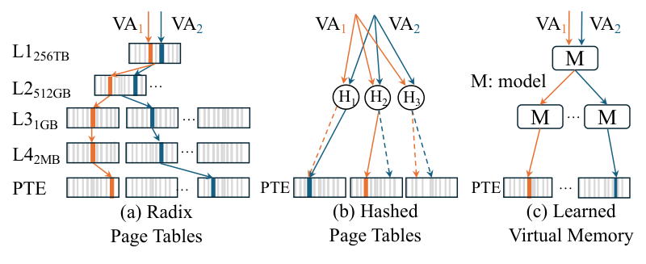
Kaiyang Zhao, Yuang Chen, Xenia Xu, Dan Schatzberg, Nastaran Hajinaza, Rupin Vakharwala, Andy Anderson, and Dimitrios Skarlatos. Learning to Walk: Architecting Learned Virtual Memory Translation. MICRO 2025. DOI: https://doi.org/10.1145/3725843.3756093. Copyright 2025 the owner/authors. Source: https://www.pdl.cmu.edu/PDL-FTP/BigLearning/kzhao-MICRO25.pdf. CC BY 4.0: https://creativecommons.org/licenses/by/4.0/. Figures cropped from the exact historical PDF and rasterized at 240 dpi; captions excluded and diagram content unchanged. No endorsement implied. Cropped from the paper and rasterized at 240 dpi; captions excluded and diagram content unchanged.
原文物理页 3 · CC BY 4.0
LVM · MICRO 2025 · 图 4
LVM 地址转换示例图
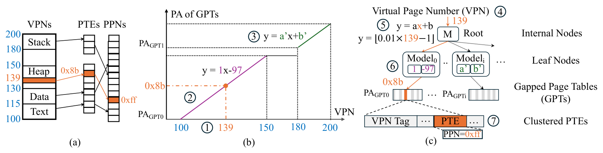
Kaiyang Zhao, Yuang Chen, Xenia Xu, Dan Schatzberg, Nastaran Hajinaza, Rupin Vakharwala, Andy Anderson, and Dimitrios Skarlatos. Learning to Walk: Architecting Learned Virtual Memory Translation. MICRO 2025. DOI: https://doi.org/10.1145/3725843.3756093. Copyright 2025 the owner/authors. Source: https://www.pdl.cmu.edu/PDL-FTP/BigLearning/kzhao-MICRO25.pdf. CC BY 4.0: https://creativecommons.org/licenses/by/4.0/. Figures cropped from the exact historical PDF and rasterized at 240 dpi; captions excluded and diagram content unchanged. No endorsement implied. Cropped from the paper and rasterized at 240 dpi; captions excluded and diagram content unchanged.
原文物理页 5 · CC BY 4.0
LVM · MICRO 2025 · 图 5
插入操作前后对比图
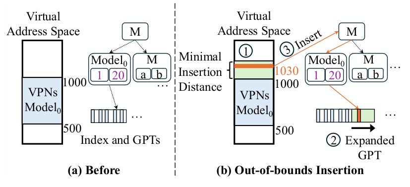
Kaiyang Zhao, Yuang Chen, Xenia Xu, Dan Schatzberg, Nastaran Hajinaza, Rupin Vakharwala, Andy Anderson, and Dimitrios Skarlatos. Learning to Walk: Architecting Learned Virtual Memory Translation. MICRO 2025. DOI: https://doi.org/10.1145/3725843.3756093. Copyright 2025 the owner/authors. Source: https://www.pdl.cmu.edu/PDL-FTP/BigLearning/kzhao-MICRO25.pdf. CC BY 4.0: https://creativecommons.org/licenses/by/4.0/. Figures cropped from the exact historical PDF and rasterized at 240 dpi; captions excluded and diagram content unchanged. No endorsement implied. Cropped from the paper and rasterized at 240 dpi; captions excluded and diagram content unchanged.
原文物理页 8 · CC BY 4.0
LVM · MICRO 2025 · 图 6
页大小映射示意图
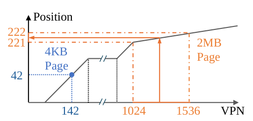
Kaiyang Zhao, Yuang Chen, Xenia Xu, Dan Schatzberg, Nastaran Hajinaza, Rupin Vakharwala, Andy Anderson, and Dimitrios Skarlatos. Learning to Walk: Architecting Learned Virtual Memory Translation. MICRO 2025. DOI: https://doi.org/10.1145/3725843.3756093. Copyright 2025 the owner/authors. Source: https://www.pdl.cmu.edu/PDL-FTP/BigLearning/kzhao-MICRO25.pdf. CC BY 4.0: https://creativecommons.org/licenses/by/4.0/. Figures cropped from the exact historical PDF and rasterized at 240 dpi; captions excluded and diagram content unchanged. No endorsement implied. Cropped from the paper and rasterized at 240 dpi; captions excluded and diagram content unchanged.
原文物理页 8 · CC BY 4.0
LVM · MICRO 2025 · 图 7
LVM 硬件框图
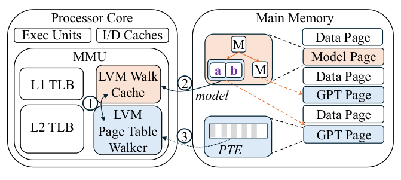
Kaiyang Zhao, Yuang Chen, Xenia Xu, Dan Schatzberg, Nastaran Hajinaza, Rupin Vakharwala, Andy Anderson, and Dimitrios Skarlatos. Learning to Walk: Architecting Learned Virtual Memory Translation. MICRO 2025. DOI: https://doi.org/10.1145/3725843.3756093. Copyright 2025 the owner/authors. Source: https://www.pdl.cmu.edu/PDL-FTP/BigLearning/kzhao-MICRO25.pdf. CC BY 4.0: https://creativecommons.org/licenses/by/4.0/. Figures cropped from the exact historical PDF and rasterized at 240 dpi; captions excluded and diagram content unchanged. No endorsement implied. Cropped from the paper and rasterized at 240 dpi; captions excluded and diagram content unchanged.
原文物理页 9 · CC BY 4.0
LVM · MICRO 2025 · 图 8
页表遍历缓存条目布局图
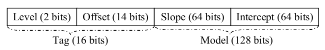
Kaiyang Zhao, Yuang Chen, Xenia Xu, Dan Schatzberg, Nastaran Hajinaza, Rupin Vakharwala, Andy Anderson, and Dimitrios Skarlatos. Learning to Walk: Architecting Learned Virtual Memory Translation. MICRO 2025. DOI: https://doi.org/10.1145/3725843.3756093. Copyright 2025 the owner/authors. Source: https://www.pdl.cmu.edu/PDL-FTP/BigLearning/kzhao-MICRO25.pdf. CC BY 4.0: https://creativecommons.org/licenses/by/4.0/. Figures cropped from the exact historical PDF and rasterized at 240 dpi; captions excluded and diagram content unchanged. No endorsement implied. Cropped from the paper and rasterized at 240 dpi; captions excluded and diagram content unchanged.
原文物理页 9 · CC BY 4.0
OmniSim · MICRO 2025 · 图 2
硬件时序与线程调度对比图
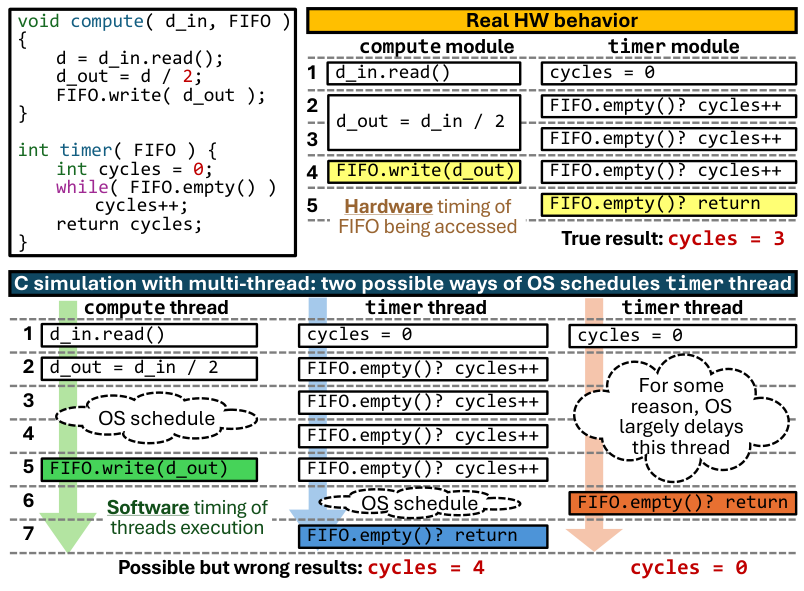
Rishov Sarkar, Cong Hao. OmniSim: Simulating Hardware with C Speed and RTL Accuracy for High-Level Synthesis Designs. MICRO 2025. DOI: https://doi.org/10.1145/3725843.3756033. Version: arXiv:2508.19299v1, 25 Aug 2025; MICRO 2025 conference-layout author manuscript. Copyright 2025 the owner/authors. Source: https://arxiv.org/pdf/2508.19299v1. CC BY 4.0: https://creativecommons.org/licenses/by/4.0/. Whole figures cropped from this exact PDF and rasterized at 240 dpi; numbered captions excluded, figure content unchanged. No endorsement implied. Whole figure cropped from the specified source PDF and rasterized at 240 dpi; numbered caption excluded, figure content unchanged.
原文物理页 2 · CC BY 4.0
OmniSim · MICRO 2025 · 图 3
数据流设计分类表
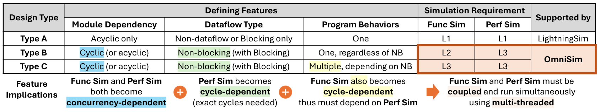
Rishov Sarkar, Cong Hao. OmniSim: Simulating Hardware with C Speed and RTL Accuracy for High-Level Synthesis Designs. MICRO 2025. DOI: https://doi.org/10.1145/3725843.3756033. Version: arXiv:2508.19299v1, 25 Aug 2025; MICRO 2025 conference-layout author manuscript. Copyright 2025 the owner/authors. Source: https://arxiv.org/pdf/2508.19299v1. CC BY 4.0: https://creativecommons.org/licenses/by/4.0/. Whole figures cropped from this exact PDF and rasterized at 240 dpi; numbered captions excluded, figure content unchanged. No endorsement implied. Whole figure cropped from the specified source PDF and rasterized at 240 dpi; numbered caption excluded, figure content unchanged.
原文物理页 4 · CC BY 4.0
OmniSim · MICRO 2025 · 图 4
设计分类与代码示例图
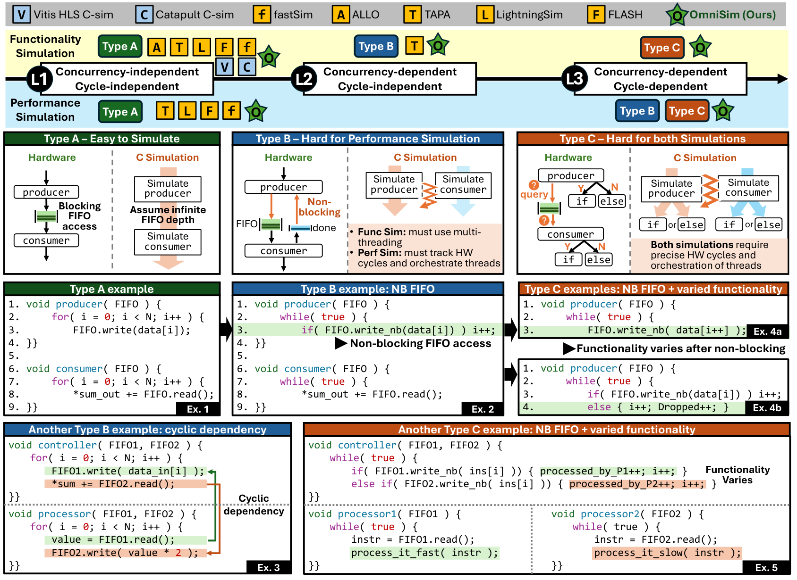
Rishov Sarkar, Cong Hao. OmniSim: Simulating Hardware with C Speed and RTL Accuracy for High-Level Synthesis Designs. MICRO 2025. DOI: https://doi.org/10.1145/3725843.3756033. Version: arXiv:2508.19299v1, 25 Aug 2025; MICRO 2025 conference-layout author manuscript. Copyright 2025 the owner/authors. Source: https://arxiv.org/pdf/2508.19299v1. CC BY 4.0: https://creativecommons.org/licenses/by/4.0/. Whole figures cropped from this exact PDF and rasterized at 240 dpi; numbered captions excluded, figure content unchanged. No endorsement implied. Whole figure cropped from the specified source PDF and rasterized at 240 dpi; numbered caption excluded, figure content unchanged.
原文物理页 4 · CC BY 4.0
OmniSim · MICRO 2025 · 图 5
仿真耦合方式对比图
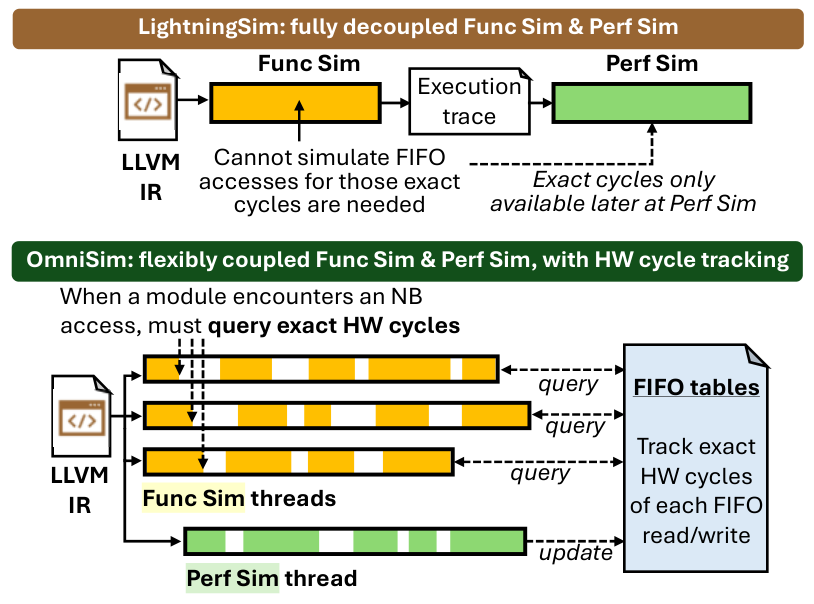
Rishov Sarkar, Cong Hao. OmniSim: Simulating Hardware with C Speed and RTL Accuracy for High-Level Synthesis Designs. MICRO 2025. DOI: https://doi.org/10.1145/3725843.3756033. Version: arXiv:2508.19299v1, 25 Aug 2025; MICRO 2025 conference-layout author manuscript. Copyright 2025 the owner/authors. Source: https://arxiv.org/pdf/2508.19299v1. CC BY 4.0: https://creativecommons.org/licenses/by/4.0/. Whole figures cropped from this exact PDF and rasterized at 240 dpi; numbered captions excluded, figure content unchanged. No endorsement implied. Whole figure cropped from the specified source PDF and rasterized at 240 dpi; numbered caption excluded, figure content unchanged.
原文物理页 6 · CC BY 4.0
OmniSim · MICRO 2025 · 图 7
线程协同执行流程图
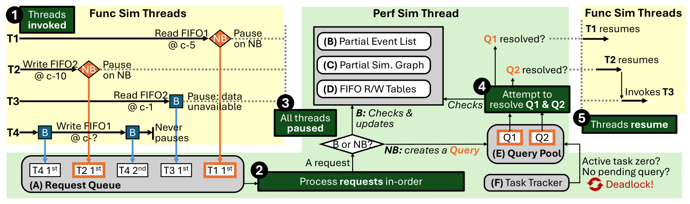
Rishov Sarkar, Cong Hao. OmniSim: Simulating Hardware with C Speed and RTL Accuracy for High-Level Synthesis Designs. MICRO 2025. DOI: https://doi.org/10.1145/3725843.3756033. Version: arXiv:2508.19299v1, 25 Aug 2025; MICRO 2025 conference-layout author manuscript. Copyright 2025 the owner/authors. Source: https://arxiv.org/pdf/2508.19299v1. CC BY 4.0: https://creativecommons.org/licenses/by/4.0/. Whole figures cropped from this exact PDF and rasterized at 240 dpi; numbered captions excluded, figure content unchanged. No endorsement implied. Whole figure cropped from the specified source PDF and rasterized at 240 dpi; numbered caption excluded, figure content unchanged.
原文物理页 9 · CC BY 4.0
Compass · ASPLOS 2026 · 图 1
污点验证总体流程图
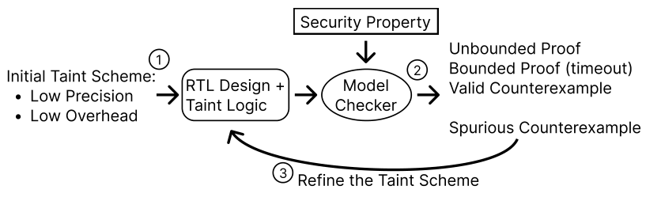
Yuheng Yang, Qinhan Tan, Thomas Bourgeat, Sharad Malik, Mengjia Yan. Compass: Navigating the Design Space of Taint Schemes for RTL Security Verification. ASPLOS 2026, Volume 2. DOI: https://doi.org/10.1145/3779212.3790144. Version: Exact author-hosted ACM ASPLOS 2026 Volume 2 conference-layout PDF; no publisher-binary equivalence claimed. Copyright 2026 the owner/authors. Source: https://people.csail.mit.edu/mengjia/data/2026.ASPLOS.Compass.pdf. CC BY 4.0: https://creativecommons.org/licenses/by/4.0/. Whole figures cropped from this exact PDF and rasterized at 240 dpi; numbered captions excluded, figure content unchanged. No endorsement implied. Whole figure cropped from the specified source PDF and rasterized at 240 dpi; numbered caption excluded, figure content unchanged.
原文物理页 5 · CC BY 4.0
Compass · ASPLOS 2026 · 图 2
污点传播与细化电路示例
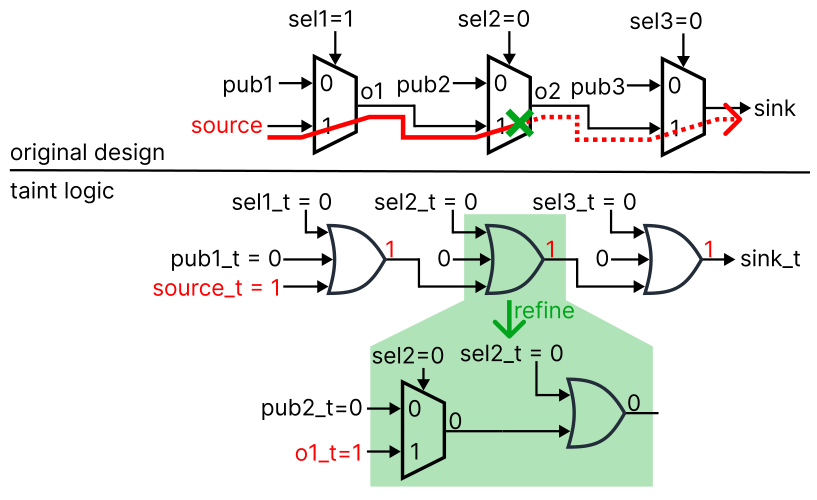
Yuheng Yang, Qinhan Tan, Thomas Bourgeat, Sharad Malik, Mengjia Yan. Compass: Navigating the Design Space of Taint Schemes for RTL Security Verification. ASPLOS 2026, Volume 2. DOI: https://doi.org/10.1145/3779212.3790144. Version: Exact author-hosted ACM ASPLOS 2026 Volume 2 conference-layout PDF; no publisher-binary equivalence claimed. Copyright 2026 the owner/authors. Source: https://people.csail.mit.edu/mengjia/data/2026.ASPLOS.Compass.pdf. CC BY 4.0: https://creativecommons.org/licenses/by/4.0/. Whole figures cropped from this exact PDF and rasterized at 240 dpi; numbered captions excluded, figure content unchanged. No endorsement implied. Whole figure cropped from the specified source PDF and rasterized at 240 dpi; numbered caption excluded, figure content unchanged.
原文物理页 6 · CC BY 4.0
Compass · ASPLOS 2026 · 图 3
污点方案迭代细化流程图
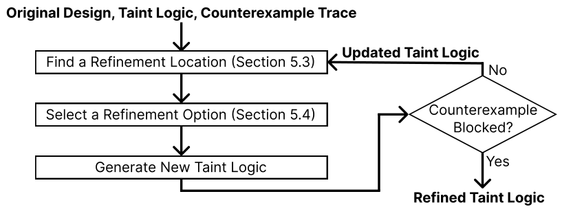
Yuheng Yang, Qinhan Tan, Thomas Bourgeat, Sharad Malik, Mengjia Yan. Compass: Navigating the Design Space of Taint Schemes for RTL Security Verification. ASPLOS 2026, Volume 2. DOI: https://doi.org/10.1145/3779212.3790144. Version: Exact author-hosted ACM ASPLOS 2026 Volume 2 conference-layout PDF; no publisher-binary equivalence claimed. Copyright 2026 the owner/authors. Source: https://people.csail.mit.edu/mengjia/data/2026.ASPLOS.Compass.pdf. CC BY 4.0: https://creativecommons.org/licenses/by/4.0/. Whole figures cropped from this exact PDF and rasterized at 240 dpi; numbered captions excluded, figure content unchanged. No endorsement implied. Whole figure cropped from the specified source PDF and rasterized at 240 dpi; numbered caption excluded, figure content unchanged.
原文物理页 7 · CC BY 4.0
Compass · ASPLOS 2026 · 图 4
细化策略优先级图
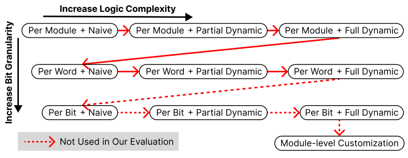
Yuheng Yang, Qinhan Tan, Thomas Bourgeat, Sharad Malik, Mengjia Yan. Compass: Navigating the Design Space of Taint Schemes for RTL Security Verification. ASPLOS 2026, Volume 2. DOI: https://doi.org/10.1145/3779212.3790144. Version: Exact author-hosted ACM ASPLOS 2026 Volume 2 conference-layout PDF; no publisher-binary equivalence claimed. Copyright 2026 the owner/authors. Source: https://people.csail.mit.edu/mengjia/data/2026.ASPLOS.Compass.pdf. CC BY 4.0: https://creativecommons.org/licenses/by/4.0/. Whole figures cropped from this exact PDF and rasterized at 240 dpi; numbered captions excluded, figure content unchanged. No endorsement implied. Whole figure cropped from the specified source PDF and rasterized at 240 dpi; numbered caption excluded, figure content unchanged.
原文物理页 8 · CC BY 4.0
PCcheck · ASPLOS 2025 · 图 3
传统检查点执行时序图
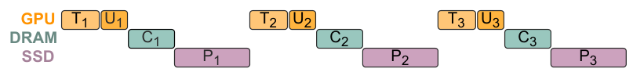
Foteini Strati, Michal Friedman, Ana Klimovic. PCcheck: Persistent Concurrent Checkpointing for ML. ASPLOS 2025, Volume 1. DOI: https://doi.org/10.1145/3669940.3707255. Version: Exact frozen author-hosted ACM conference-layout PDF, printed pages 811–827; publisher binary equivalence not asserted. Source: https://anakli.inf.ethz.ch/papers/PCcheck_asplos25.pdf. CC BY 4.0: https://creativecommons.org/licenses/by/4.0/. Whole figures cropped from this exact PDF and rasterized at 240 dpi; captions excluded, all figure content unchanged. No endorsement implied. Whole figure cropped from the specified source PDF and rasterized at 240 dpi; numbered caption excluded, figure content unchanged.
原文物理页 3 · CC BY 4.0
PCcheck · ASPLOS 2025 · 图 4
训练与检查点复制重叠图
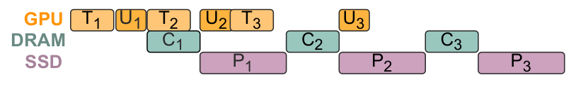
Foteini Strati, Michal Friedman, Ana Klimovic. PCcheck: Persistent Concurrent Checkpointing for ML. ASPLOS 2025, Volume 1. DOI: https://doi.org/10.1145/3669940.3707255. Version: Exact frozen author-hosted ACM conference-layout PDF, printed pages 811–827; publisher binary equivalence not asserted. Source: https://anakli.inf.ethz.ch/papers/PCcheck_asplos25.pdf. CC BY 4.0: https://creativecommons.org/licenses/by/4.0/. Whole figures cropped from this exact PDF and rasterized at 240 dpi; captions excluded, all figure content unchanged. No endorsement implied. Whole figure cropped from the specified source PDF and rasterized at 240 dpi; numbered caption excluded, figure content unchanged.
原文物理页 3 · CC BY 4.0
PCcheck · ASPLOS 2025 · 图 5
并发检查点系统架构图
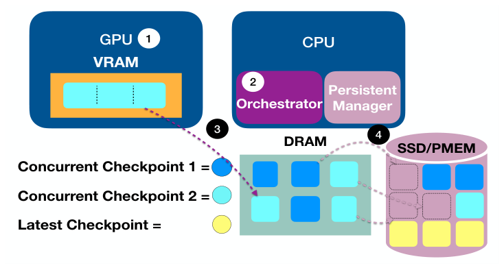
Foteini Strati, Michal Friedman, Ana Klimovic. PCcheck: Persistent Concurrent Checkpointing for ML. ASPLOS 2025, Volume 1. DOI: https://doi.org/10.1145/3669940.3707255. Version: Exact frozen author-hosted ACM conference-layout PDF, printed pages 811–827; publisher binary equivalence not asserted. Source: https://anakli.inf.ethz.ch/papers/PCcheck_asplos25.pdf. CC BY 4.0: https://creativecommons.org/licenses/by/4.0/. Whole figures cropped from this exact PDF and rasterized at 240 dpi; captions excluded, all figure content unchanged. No endorsement implied. Whole figure cropped from the specified source PDF and rasterized at 240 dpi; numbered caption excluded, figure content unchanged.
原文物理页 4 · CC BY 4.0
PCcheck · ASPLOS 2025 · 图 6
并发检查点执行时序图
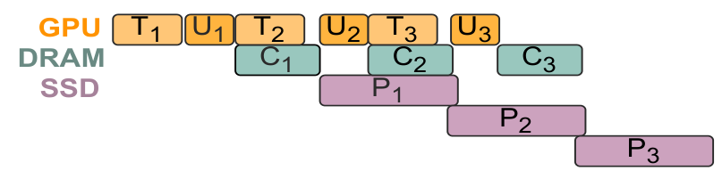
Foteini Strati, Michal Friedman, Ana Klimovic. PCcheck: Persistent Concurrent Checkpointing for ML. ASPLOS 2025, Volume 1. DOI: https://doi.org/10.1145/3669940.3707255. Version: Exact frozen author-hosted ACM conference-layout PDF, printed pages 811–827; publisher binary equivalence not asserted. Source: https://anakli.inf.ethz.ch/papers/PCcheck_asplos25.pdf. CC BY 4.0: https://creativecommons.org/licenses/by/4.0/. Whole figures cropped from this exact PDF and rasterized at 240 dpi; captions excluded, all figure content unchanged. No endorsement implied. Whole figure cropped from the specified source PDF and rasterized at 240 dpi; numbered caption excluded, figure content unchanged.
原文物理页 5 · CC BY 4.0
PCcheck · ASPLOS 2025 · 图 7
分块检查点流水线图
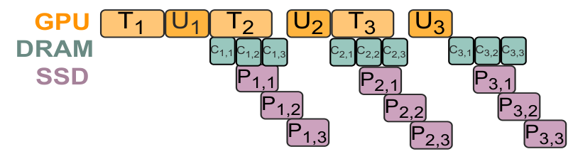
Foteini Strati, Michal Friedman, Ana Klimovic. PCcheck: Persistent Concurrent Checkpointing for ML. ASPLOS 2025, Volume 1. DOI: https://doi.org/10.1145/3669940.3707255. Version: Exact frozen author-hosted ACM conference-layout PDF, printed pages 811–827; publisher binary equivalence not asserted. Source: https://anakli.inf.ethz.ch/papers/PCcheck_asplos25.pdf. CC BY 4.0: https://creativecommons.org/licenses/by/4.0/. Whole figures cropped from this exact PDF and rasterized at 240 dpi; captions excluded, all figure content unchanged. No endorsement implied. Whole figure cropped from the specified source PDF and rasterized at 240 dpi; numbered caption excluded, figure content unchanged.
原文物理页 5 · CC BY 4.0
CXL model · ASPLOS 2026 · 图 1
CXL存储与刷新语义示意图
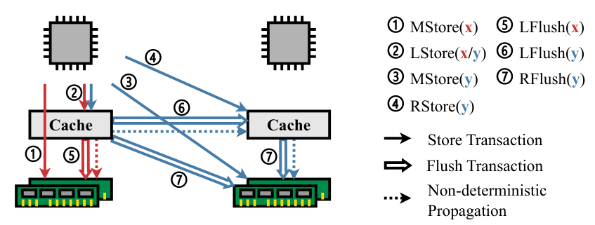
Gal Assa, Moritz Lumme, Lucas Bürgi, Michal Friedman, Ori Lahav. A Programming Model for Disaggregated Memory over CXL. ASPLOS 2026. DOI: https://doi.org/10.1145/3779212.3790121. Version: Exact frozen author-hosted ACM conference-layout PDF; publisher binary equivalence not asserted. Source: https://www.cs.tau.ac.il/~orilahav/papers/asplos26.pdf. CC BY 4.0: https://creativecommons.org/licenses/by/4.0/. Whole figures cropped from this exact PDF and rasterized at 240 dpi; captions excluded, all figure content unchanged. No endorsement implied. Whole figure cropped from the specified source PDF and rasterized at 240 dpi; numbered caption excluded, figure content unchanged.
原文物理页 5 · CC BY 4.0
CXL model · ASPLOS 2026 · 图 2
CXL操作语义规则图
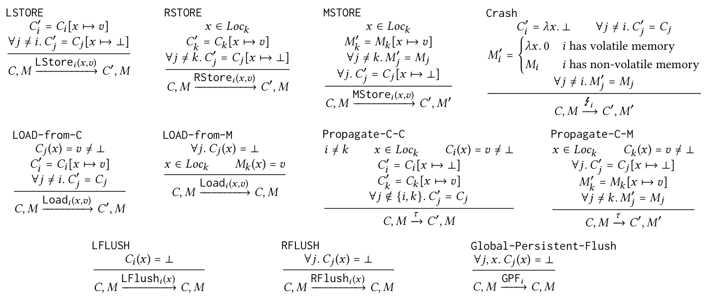
Gal Assa, Moritz Lumme, Lucas Bürgi, Michal Friedman, Ori Lahav. A Programming Model for Disaggregated Memory over CXL. ASPLOS 2026. DOI: https://doi.org/10.1145/3779212.3790121. Version: Exact frozen author-hosted ACM conference-layout PDF; publisher binary equivalence not asserted. Source: https://www.cs.tau.ac.il/~orilahav/papers/asplos26.pdf. CC BY 4.0: https://creativecommons.org/licenses/by/4.0/. Whole figures cropped from this exact PDF and rasterized at 240 dpi; captions excluded, all figure content unchanged. No endorsement implied. Whole figure cropped from the specified source PDF and rasterized at 240 dpi; numbered caption excluded, figure content unchanged.
原文物理页 7 · CC BY 4.0
CXL model · ASPLOS 2026 · 图 3
崩溃一致性判例图
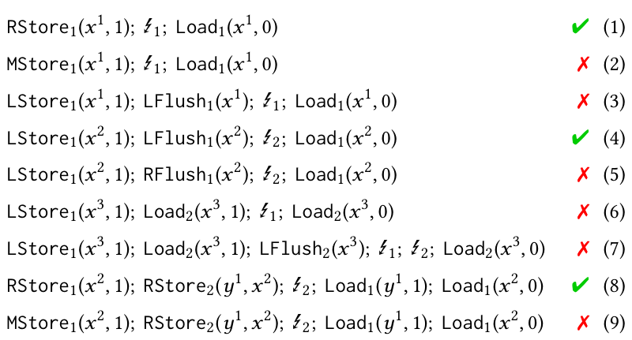
Gal Assa, Moritz Lumme, Lucas Bürgi, Michal Friedman, Ori Lahav. A Programming Model for Disaggregated Memory over CXL. ASPLOS 2026. DOI: https://doi.org/10.1145/3779212.3790121. Version: Exact frozen author-hosted ACM conference-layout PDF; publisher binary equivalence not asserted. Source: https://www.cs.tau.ac.il/~orilahav/papers/asplos26.pdf. CC BY 4.0: https://creativecommons.org/licenses/by/4.0/. Whole figures cropped from this exact PDF and rasterized at 240 dpi; captions excluded, all figure content unchanged. No endorsement implied. Whole figure cropped from the specified source PDF and rasterized at 240 dpi; numbered caption excluded, figure content unchanged.
原文物理页 8 · CC BY 4.0
CXL model · ASPLOS 2026 · 图 4
CXL系统拓扑对比图
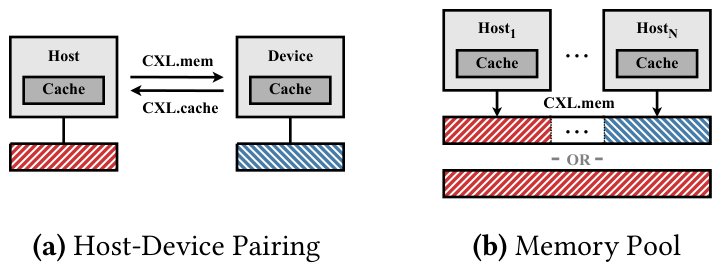
Gal Assa, Moritz Lumme, Lucas Bürgi, Michal Friedman, Ori Lahav. A Programming Model for Disaggregated Memory over CXL. ASPLOS 2026. DOI: https://doi.org/10.1145/3779212.3790121. Version: Exact frozen author-hosted ACM conference-layout PDF; publisher binary equivalence not asserted. Source: https://www.cs.tau.ac.il/~orilahav/papers/asplos26.pdf. CC BY 4.0: https://creativecommons.org/licenses/by/4.0/. Whole figures cropped from this exact PDF and rasterized at 240 dpi; captions excluded, all figure content unchanged. No endorsement implied. Whole figure cropped from the specified source PDF and rasterized at 240 dpi; numbered caption excluded, figure content unchanged.
原文物理页 9 · CC BY 4.0
MAGE · DAC 2025 / arXiv v1 · 图 1
多智能体RTL生成架构图
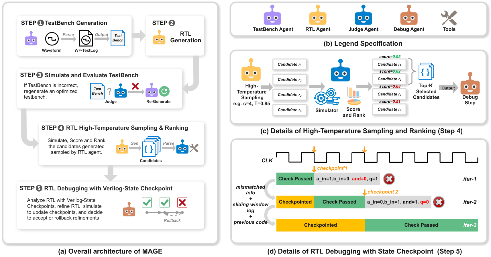
原图 (c)/(d) 与图注对应描述顺序不一致，这里保留原样。
Yujie Zhao, Hejia Zhang, Hanxian Huang, Zhongming Yu, Jishen Zhao. MAGE: A Multi-Agent Engine for Automated RTL Code Generation. DAC 2025; author manuscript 2024. DOI: https://doi.org/10.1109/DAC63849.2025.11133191. Version: arXiv:2412.07822v1, 10 December 2024; seven-page author manuscript, not a claim of final DAC PDF identity. Source: https://arxiv.org/pdf/2412.07822v1. CC BY 4.0: https://creativecommons.org/licenses/by/4.0/. Whole figures cropped from this exact PDF and rasterized at 240 dpi; captions excluded, all figure content unchanged. No endorsement implied. Whole figure cropped from the specified source PDF and rasterized at 240 dpi; numbered caption excluded, figure content unchanged.
原文物理页 3 · CC BY 4.0
MAGE · DAC 2025 / arXiv v1 · 图 3
检查点调试案例对比图
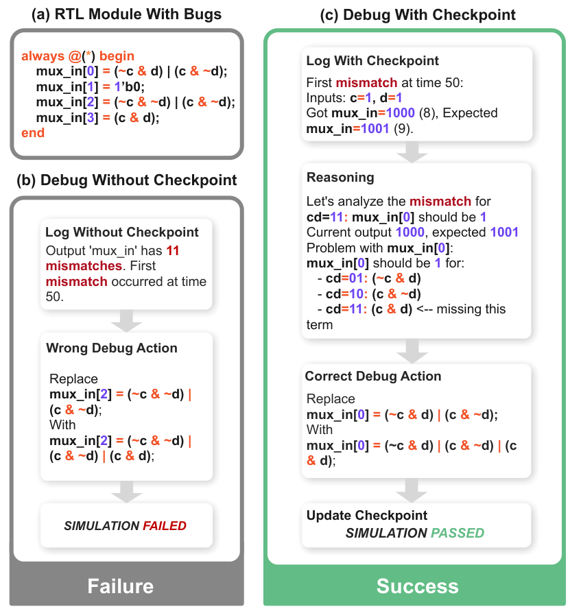
这是调试案例对比，不是总体统计。
Yujie Zhao, Hejia Zhang, Hanxian Huang, Zhongming Yu, Jishen Zhao. MAGE: A Multi-Agent Engine for Automated RTL Code Generation. DAC 2025; author manuscript 2024. DOI: https://doi.org/10.1109/DAC63849.2025.11133191. Version: arXiv:2412.07822v1, 10 December 2024; seven-page author manuscript, not a claim of final DAC PDF identity. Source: https://arxiv.org/pdf/2412.07822v1. CC BY 4.0: https://creativecommons.org/licenses/by/4.0/. Whole figures cropped from this exact PDF and rasterized at 240 dpi; captions excluded, all figure content unchanged. No endorsement implied. Whole figure cropped from the specified source PDF and rasterized at 240 dpi; numbered caption excluded, figure content unchanged.
原文物理页 6 · CC BY 4.0
StreamTensor · MICRO 2025 · 图 1
数据流加速器计算与调度图
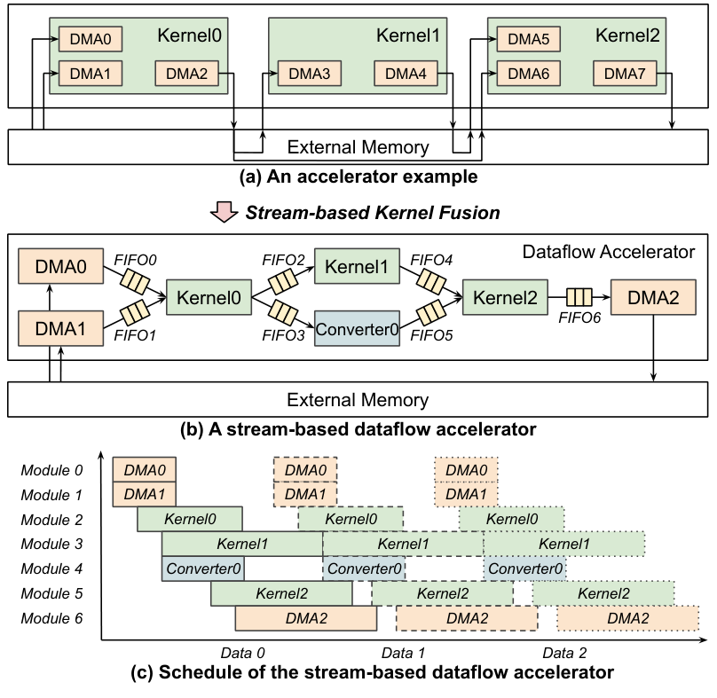
Hanchen Ye, Deming Chen. StreamTensor: Make Tensors Stream in Dataflow Accelerators for LLMs. MICRO 2025. DOI: https://doi.org/10.1145/3725843.3762817. Version: Exact frozen author-hosted conference-layout PDF; publisher binary equivalence not asserted. Source: https://hanchenye.com/assets/pdfs/MICRO25_StreamTensor.pdf. CC BY 4.0: https://creativecommons.org/licenses/by/4.0/. Whole figures cropped from this exact PDF and rasterized at 240 dpi; captions excluded, all figure content unchanged. No endorsement implied. Whole figure cropped from the specified source PDF and rasterized at 240 dpi; numbered caption excluded, figure content unchanged.
原文物理页 1 · CC BY 4.0
StreamTensor · MICRO 2025 · 图 2
传统数据流加速器设计流程图
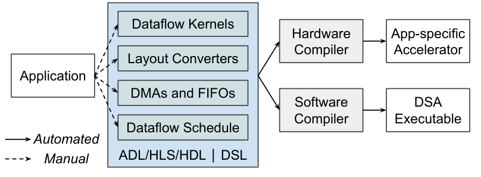
Hanchen Ye, Deming Chen. StreamTensor: Make Tensors Stream in Dataflow Accelerators for LLMs. MICRO 2025. DOI: https://doi.org/10.1145/3725843.3762817. Version: Exact frozen author-hosted conference-layout PDF; publisher binary equivalence not asserted. Source: https://hanchenye.com/assets/pdfs/MICRO25_StreamTensor.pdf. CC BY 4.0: https://creativecommons.org/licenses/by/4.0/. Whole figures cropped from this exact PDF and rasterized at 240 dpi; captions excluded, all figure content unchanged. No endorsement implied. Whole figure cropped from the specified source PDF and rasterized at 240 dpi; numbered caption excluded, figure content unchanged.
原文物理页 2 · CC BY 4.0
StreamTensor · MICRO 2025 · 图 3
数据流编译器设计流程图
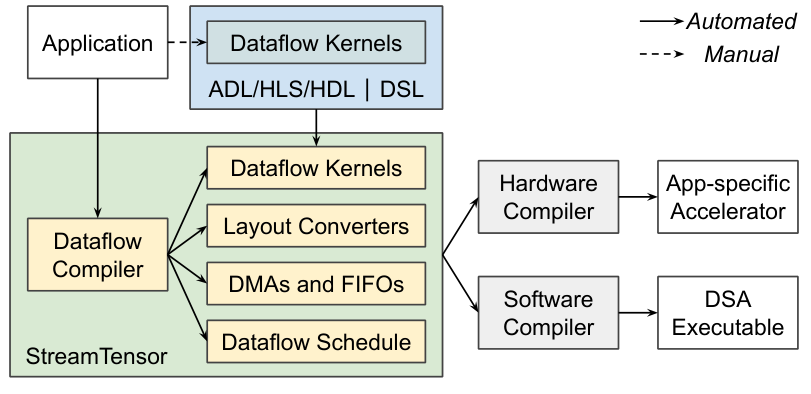
Hanchen Ye, Deming Chen. StreamTensor: Make Tensors Stream in Dataflow Accelerators for LLMs. MICRO 2025. DOI: https://doi.org/10.1145/3725843.3762817. Version: Exact frozen author-hosted conference-layout PDF; publisher binary equivalence not asserted. Source: https://hanchenye.com/assets/pdfs/MICRO25_StreamTensor.pdf. CC BY 4.0: https://creativecommons.org/licenses/by/4.0/. Whole figures cropped from this exact PDF and rasterized at 240 dpi; captions excluded, all figure content unchanged. No endorsement implied. Whole figure cropped from the specified source PDF and rasterized at 240 dpi; numbered caption excluded, figure content unchanged.
原文物理页 3 · CC BY 4.0
StreamTensor · MICRO 2025 · 图 4
编译流程与设计空间图
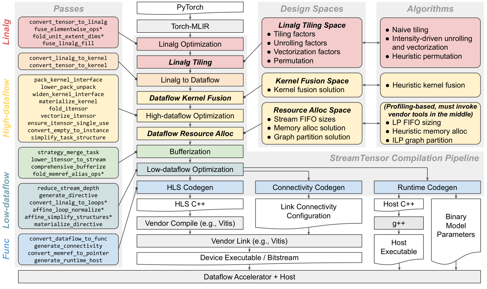
Hanchen Ye, Deming Chen. StreamTensor: Make Tensors Stream in Dataflow Accelerators for LLMs. MICRO 2025. DOI: https://doi.org/10.1145/3725843.3762817. Version: Exact frozen author-hosted conference-layout PDF; publisher binary equivalence not asserted. Source: https://hanchenye.com/assets/pdfs/MICRO25_StreamTensor.pdf. CC BY 4.0: https://creativecommons.org/licenses/by/4.0/. Whole figures cropped from this exact PDF and rasterized at 240 dpi; captions excluded, all figure content unchanged. No endorsement implied. Whole figure cropped from the specified source PDF and rasterized at 240 dpi; numbered caption excluded, figure content unchanged.
原文物理页 4 · CC BY 4.0
StreamTensor · MICRO 2025 · 图 5
迭代张量布局与转换示意图
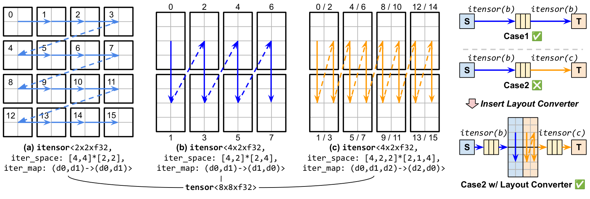
Hanchen Ye, Deming Chen. StreamTensor: Make Tensors Stream in Dataflow Accelerators for LLMs. MICRO 2025. DOI: https://doi.org/10.1145/3725843.3762817. Version: Exact frozen author-hosted conference-layout PDF; publisher binary equivalence not asserted. Source: https://hanchenye.com/assets/pdfs/MICRO25_StreamTensor.pdf. CC BY 4.0: https://creativecommons.org/licenses/by/4.0/. Whole figures cropped from this exact PDF and rasterized at 240 dpi; captions excluded, all figure content unchanged. No endorsement implied. Whole figure cropped from the specified source PDF and rasterized at 240 dpi; numbered caption excluded, figure content unchanged.
原文物理页 4 · CC BY 4.0
StreamTensor · MICRO 2025 · 图 6
张量分块与内核融合变换图
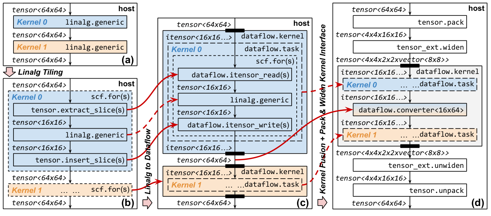
Hanchen Ye, Deming Chen. StreamTensor: Make Tensors Stream in Dataflow Accelerators for LLMs. MICRO 2025. DOI: https://doi.org/10.1145/3725843.3762817. Version: Exact frozen author-hosted conference-layout PDF; publisher binary equivalence not asserted. Source: https://hanchenye.com/assets/pdfs/MICRO25_StreamTensor.pdf. CC BY 4.0: https://creativecommons.org/licenses/by/4.0/. Whole figures cropped from this exact PDF and rasterized at 240 dpi; captions excluded, all figure content unchanged. No endorsement implied. Whole figure cropped from the specified source PDF and rasterized at 240 dpi; numbered caption excluded, figure content unchanged.
原文物理页 7 · CC BY 4.0
StreamTensor · MICRO 2025 · 图 7
数据流物化与向量化变换图
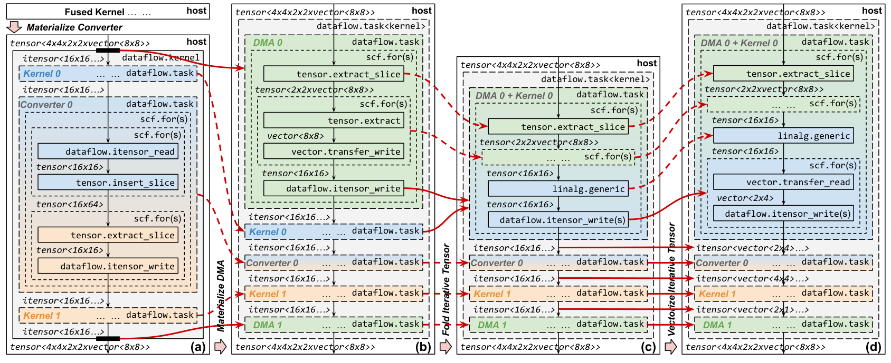
Hanchen Ye, Deming Chen. StreamTensor: Make Tensors Stream in Dataflow Accelerators for LLMs. MICRO 2025. DOI: https://doi.org/10.1145/3725843.3762817. Version: Exact frozen author-hosted conference-layout PDF; publisher binary equivalence not asserted. Source: https://hanchenye.com/assets/pdfs/MICRO25_StreamTensor.pdf. CC BY 4.0: https://creativecommons.org/licenses/by/4.0/. Whole figures cropped from this exact PDF and rasterized at 240 dpi; captions excluded, all figure content unchanged. No endorsement implied. Whole figure cropped from the specified source PDF and rasterized at 240 dpi; numbered caption excluded, figure content unchanged.
原文物理页 8 · CC BY 4.0
StreamTensor · MICRO 2025 · 图 8
FIFO容量建模与优化示意图
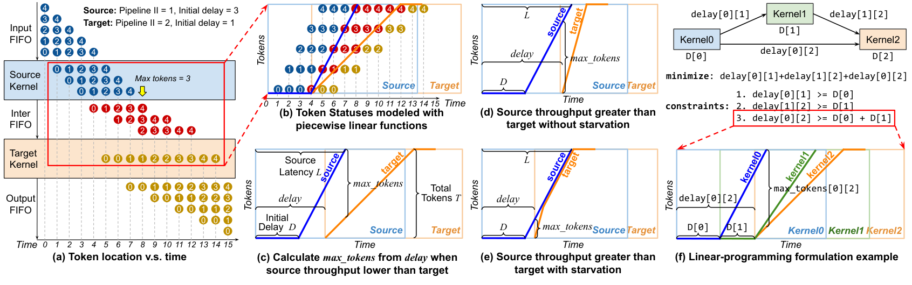
Hanchen Ye, Deming Chen. StreamTensor: Make Tensors Stream in Dataflow Accelerators for LLMs. MICRO 2025. DOI: https://doi.org/10.1145/3725843.3762817. Version: Exact frozen author-hosted conference-layout PDF; publisher binary equivalence not asserted. Source: https://hanchenye.com/assets/pdfs/MICRO25_StreamTensor.pdf. CC BY 4.0: https://creativecommons.org/licenses/by/4.0/. Whole figures cropped from this exact PDF and rasterized at 240 dpi; captions excluded, all figure content unchanged. No endorsement implied. Whole figure cropped from the specified source PDF and rasterized at 240 dpi; numbered caption excluded, figure content unchanged.
原文物理页 10 · CC BY 4.0
Tally · ASPLOS 2025 · 图 1
GPU线程层级示意图
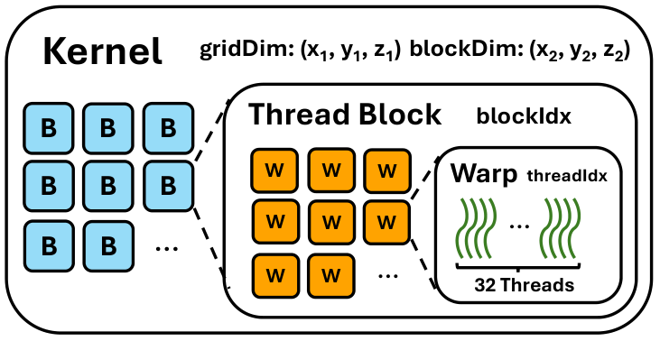
Wei Zhao, Anand Jayarajan, Gennady Pekhimenko. Tally: Non-Intrusive Performance Isolation for Concurrent Deep Learning Workloads. ASPLOS 2025, Volume 1. DOI: https://doi.org/10.1145/3669940.3707282. Version: arXiv:2410.07381v3, 28 February 2025; exact frozen conference-layout manuscript. Source: https://arxiv.org/pdf/2410.07381v3. CC BY 4.0: https://creativecommons.org/licenses/by/4.0/. Whole figures cropped from this exact PDF and rasterized at 240 dpi; captions excluded, all figure content unchanged. No endorsement implied. Whole figure cropped from the specified source PDF and rasterized at 240 dpi; numbered caption excluded, figure content unchanged.
原文物理页 3 · CC BY 4.0
Tally · ASPLOS 2025 · 图 3
内核切分与抢占变换图
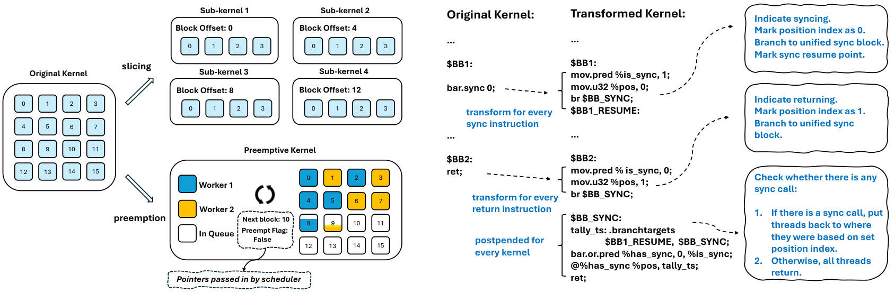
Wei Zhao, Anand Jayarajan, Gennady Pekhimenko. Tally: Non-Intrusive Performance Isolation for Concurrent Deep Learning Workloads. ASPLOS 2025, Volume 1. DOI: https://doi.org/10.1145/3669940.3707282. Version: arXiv:2410.07381v3, 28 February 2025; exact frozen conference-layout manuscript. Source: https://arxiv.org/pdf/2410.07381v3. CC BY 4.0: https://creativecommons.org/licenses/by/4.0/. Whole figures cropped from this exact PDF and rasterized at 240 dpi; captions excluded, all figure content unchanged. No endorsement implied. Whole figure cropped from the specified source PDF and rasterized at 240 dpi; numbered caption excluded, figure content unchanged.
原文物理页 6 · CC BY 4.0
Tally · ASPLOS 2025 · 图 4
优先级调度伪代码图
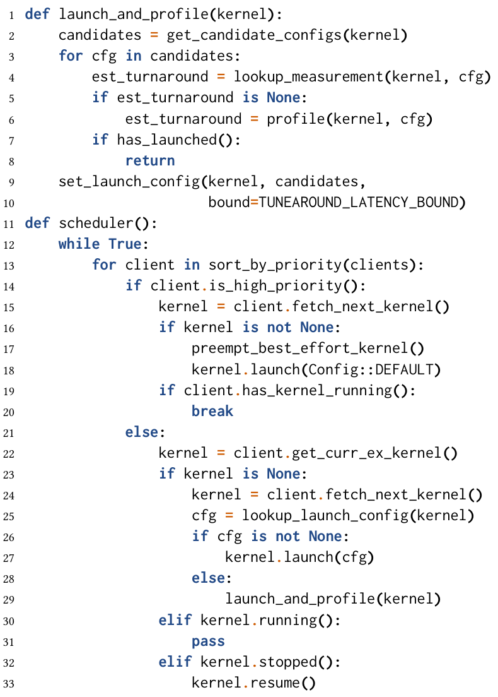
Wei Zhao, Anand Jayarajan, Gennady Pekhimenko. Tally: Non-Intrusive Performance Isolation for Concurrent Deep Learning Workloads. ASPLOS 2025, Volume 1. DOI: https://doi.org/10.1145/3669940.3707282. Version: arXiv:2410.07381v3, 28 February 2025; exact frozen conference-layout manuscript. Source: https://arxiv.org/pdf/2410.07381v3. CC BY 4.0: https://creativecommons.org/licenses/by/4.0/. Whole figures cropped from this exact PDF and rasterized at 240 dpi; captions excluded, all figure content unchanged. No endorsement implied. Whole figure cropped from the specified source PDF and rasterized at 240 dpi; numbered caption excluded, figure content unchanged.
原文物理页 7 · CC BY 4.0
Cxlalloc · ASPLOS 2026 · 图 1
CXL一致性与设备拓扑图
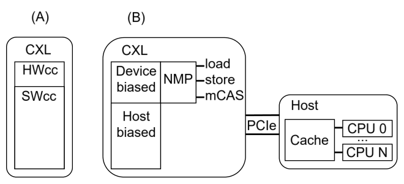
Newton Ni, Yan Sun, Zhiting Zhu, Emmett Witchel. Cxlalloc: Safe and Efficient Memory Allocation for a CXL Pod. ASPLOS 2026, Volume 2. DOI: https://doi.org/10.1145/3779212.3790149. Version: Exact frozen author-hosted ACM-layout PDF; publisher equivalence and version date not asserted. Source: https://www.cs.utexas.edu/~witchel/pubs/ni26asplos-cxlalloc.pdf. CC BY 4.0: https://creativecommons.org/licenses/by/4.0/. Whole figures cropped from this exact PDF and rasterized at 240 dpi; captions excluded, all figure content unchanged. No endorsement implied. Whole figure cropped from the specified source PDF and rasterized at 240 dpi; numbered caption excluded, figure content unchanged.
原文物理页 3 · CC BY 4.0
Cxlalloc · ASPLOS 2026 · 图 2
共享堆内存布局图
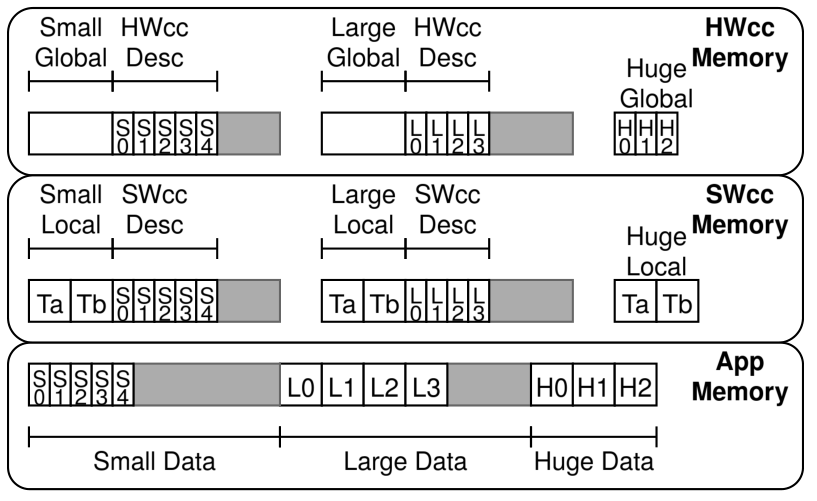
Newton Ni, Yan Sun, Zhiting Zhu, Emmett Witchel. Cxlalloc: Safe and Efficient Memory Allocation for a CXL Pod. ASPLOS 2026, Volume 2. DOI: https://doi.org/10.1145/3779212.3790149. Version: Exact frozen author-hosted ACM-layout PDF; publisher equivalence and version date not asserted. Source: https://www.cs.utexas.edu/~witchel/pubs/ni26asplos-cxlalloc.pdf. CC BY 4.0: https://creativecommons.org/licenses/by/4.0/. Whole figures cropped from this exact PDF and rasterized at 240 dpi; captions excluded, all figure content unchanged. No endorsement implied. Whole figure cropped from the specified source PDF and rasterized at 240 dpi; numbered caption excluded, figure content unchanged.
原文物理页 4 · CC BY 4.0
Cxlalloc · ASPLOS 2026 · 图 3
小对象堆类型定义图
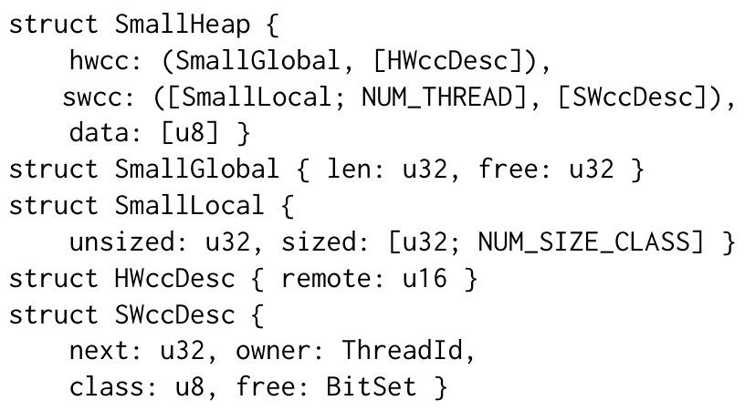
Newton Ni, Yan Sun, Zhiting Zhu, Emmett Witchel. Cxlalloc: Safe and Efficient Memory Allocation for a CXL Pod. ASPLOS 2026, Volume 2. DOI: https://doi.org/10.1145/3779212.3790149. Version: Exact frozen author-hosted ACM-layout PDF; publisher equivalence and version date not asserted. Source: https://www.cs.utexas.edu/~witchel/pubs/ni26asplos-cxlalloc.pdf. CC BY 4.0: https://creativecommons.org/licenses/by/4.0/. Whole figures cropped from this exact PDF and rasterized at 240 dpi; captions excluded, all figure content unchanged. No endorsement implied. Whole figure cropped from the specified source PDF and rasterized at 240 dpi; numbered caption excluded, figure content unchanged.
原文物理页 4 · CC BY 4.0
Cxlalloc · ASPLOS 2026 · 图 4
内存块状态转换图
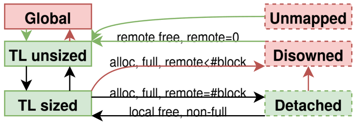
Newton Ni, Yan Sun, Zhiting Zhu, Emmett Witchel. Cxlalloc: Safe and Efficient Memory Allocation for a CXL Pod. ASPLOS 2026, Volume 2. DOI: https://doi.org/10.1145/3779212.3790149. Version: Exact frozen author-hosted ACM-layout PDF; publisher equivalence and version date not asserted. Source: https://www.cs.utexas.edu/~witchel/pubs/ni26asplos-cxlalloc.pdf. CC BY 4.0: https://creativecommons.org/licenses/by/4.0/. Whole figures cropped from this exact PDF and rasterized at 240 dpi; captions excluded, all figure content unchanged. No endorsement implied. Whole figure cropped from the specified source PDF and rasterized at 240 dpi; numbered caption excluded, figure content unchanged.
原文物理页 5 · CC BY 4.0
Cxlalloc · ASPLOS 2026 · 图 5
大对象堆类型定义图
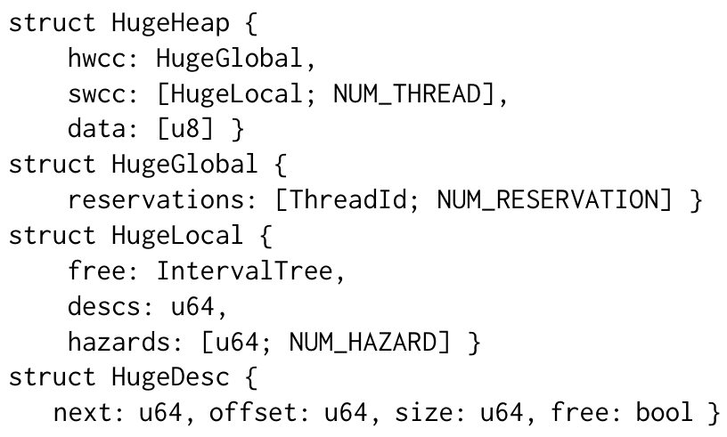
Newton Ni, Yan Sun, Zhiting Zhu, Emmett Witchel. Cxlalloc: Safe and Efficient Memory Allocation for a CXL Pod. ASPLOS 2026, Volume 2. DOI: https://doi.org/10.1145/3779212.3790149. Version: Exact frozen author-hosted ACM-layout PDF; publisher equivalence and version date not asserted. Source: https://www.cs.utexas.edu/~witchel/pubs/ni26asplos-cxlalloc.pdf. CC BY 4.0: https://creativecommons.org/licenses/by/4.0/. Whole figures cropped from this exact PDF and rasterized at 240 dpi; captions excluded, all figure content unchanged. No endorsement implied. Whole figure cropped from the specified source PDF and rasterized at 240 dpi; numbered caption excluded, figure content unchanged.
原文物理页 5 · CC BY 4.0
Cxlalloc · ASPLOS 2026 · 图 6
内存原子比较交换时序图
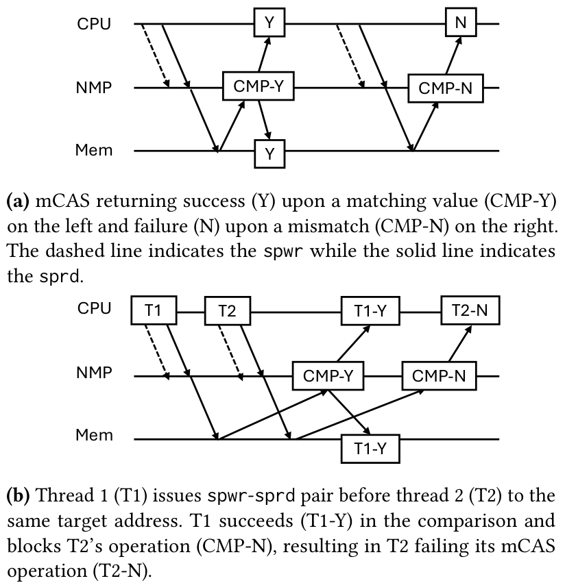
Newton Ni, Yan Sun, Zhiting Zhu, Emmett Witchel. Cxlalloc: Safe and Efficient Memory Allocation for a CXL Pod. ASPLOS 2026, Volume 2. DOI: https://doi.org/10.1145/3779212.3790149. Version: Exact frozen author-hosted ACM-layout PDF; publisher equivalence and version date not asserted. Source: https://www.cs.utexas.edu/~witchel/pubs/ni26asplos-cxlalloc.pdf. CC BY 4.0: https://creativecommons.org/licenses/by/4.0/. Whole figures cropped from this exact PDF and rasterized at 240 dpi; captions excluded, all figure content unchanged. No endorsement implied. Whole figure cropped from the specified source PDF and rasterized at 240 dpi; numbered caption excluded, figure content unchanged.
原文物理页 9 · CC BY 4.0
Quartz · MICRO 2025 · 图 2
稀疏应用算法伪代码图
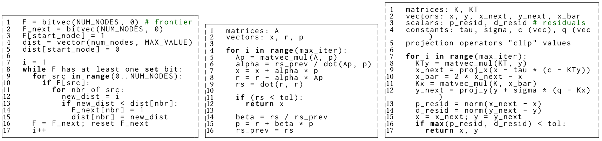
Courtney Golden, Axel Feldmann, Joel S. Emer, Daniel Sanchez. Quartz: A Reconfigurable, Distributed-Memory Accelerator for Sparse Applications. MICRO 2025. DOI: https://doi.org/10.1145/3725843.3756035. Version: Exact frozen author-hosted ACM-layout conference manuscript; metadata timestamp does not establish a publication version; publisher binary equivalence not asserted. Source: https://people.csail.mit.edu/emer/media/papers/2020s/2025/2025.10.micro.quartz.pdf. CC BY 4.0: https://creativecommons.org/licenses/by/4.0/. Whole figures cropped from this exact PDF and rasterized at 240 dpi; captions excluded, all figure content unchanged. No endorsement implied. Whole figure cropped from the specified source PDF and rasterized at 240 dpi; numbered caption excluded, figure content unchanged.
原文物理页 3 · CC BY 4.0
Quartz · MICRO 2025 · 图 3
分布式加速器芯粒架构图
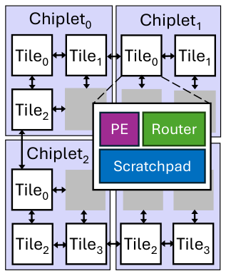
Courtney Golden, Axel Feldmann, Joel S. Emer, Daniel Sanchez. Quartz: A Reconfigurable, Distributed-Memory Accelerator for Sparse Applications. MICRO 2025. DOI: https://doi.org/10.1145/3725843.3756035. Version: Exact frozen author-hosted ACM-layout conference manuscript; metadata timestamp does not establish a publication version; publisher binary equivalence not asserted. Source: https://people.csail.mit.edu/emer/media/papers/2020s/2025/2025.10.micro.quartz.pdf. CC BY 4.0: https://creativecommons.org/licenses/by/4.0/. Whole figures cropped from this exact PDF and rasterized at 240 dpi; captions excluded, all figure content unchanged. No endorsement implied. Whole figure cropped from the specified source PDF and rasterized at 240 dpi; numbered caption excluded, figure content unchanged.
原文物理页 4 · CC BY 4.0
Quartz · MICRO 2025 · 图 4
任务生成与融合流程图
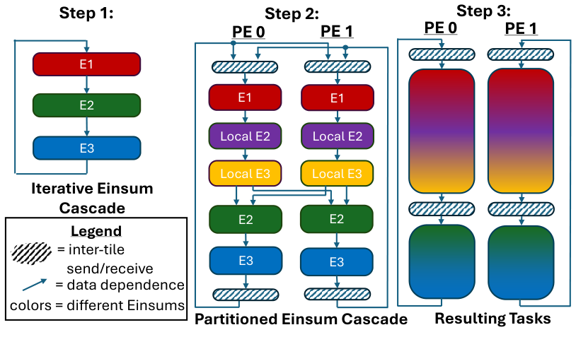
Courtney Golden, Axel Feldmann, Joel S. Emer, Daniel Sanchez. Quartz: A Reconfigurable, Distributed-Memory Accelerator for Sparse Applications. MICRO 2025. DOI: https://doi.org/10.1145/3725843.3756035. Version: Exact frozen author-hosted ACM-layout conference manuscript; metadata timestamp does not establish a publication version; publisher binary equivalence not asserted. Source: https://people.csail.mit.edu/emer/media/papers/2020s/2025/2025.10.micro.quartz.pdf. CC BY 4.0: https://creativecommons.org/licenses/by/4.0/. Whole figures cropped from this exact PDF and rasterized at 240 dpi; captions excluded, all figure content unchanged. No endorsement implied. Whole figure cropped from the specified source PDF and rasterized at 240 dpi; numbered caption excluded, figure content unchanged.
原文物理页 4 · CC BY 4.0
Quartz · MICRO 2025 · 图 5
稀疏矩阵向量乘示意图
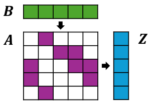
Courtney Golden, Axel Feldmann, Joel S. Emer, Daniel Sanchez. Quartz: A Reconfigurable, Distributed-Memory Accelerator for Sparse Applications. MICRO 2025. DOI: https://doi.org/10.1145/3725843.3756035. Version: Exact frozen author-hosted ACM-layout conference manuscript; metadata timestamp does not establish a publication version; publisher binary equivalence not asserted. Source: https://people.csail.mit.edu/emer/media/papers/2020s/2025/2025.10.micro.quartz.pdf. CC BY 4.0: https://creativecommons.org/licenses/by/4.0/. Whole figures cropped from this exact PDF and rasterized at 240 dpi; captions excluded, all figure content unchanged. No endorsement implied. Whole figure cropped from the specified source PDF and rasterized at 240 dpi; numbered caption excluded, figure content unchanged.
原文物理页 5 · CC BY 4.0
Quartz · MICRO 2025 · 图 6
分布式矩阵分区与计算图
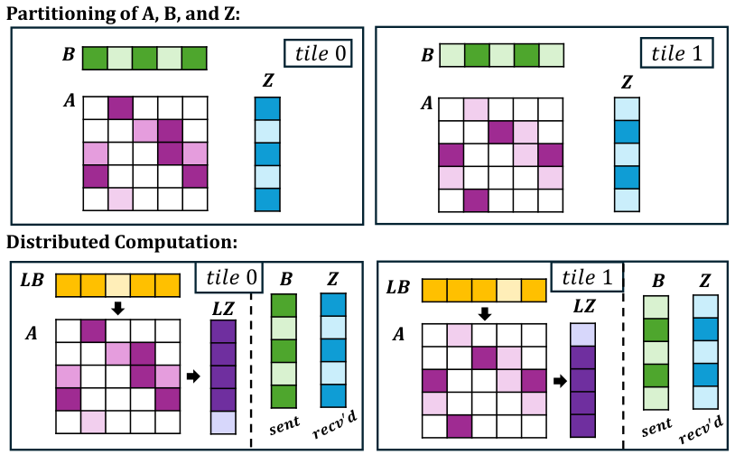
Courtney Golden, Axel Feldmann, Joel S. Emer, Daniel Sanchez. Quartz: A Reconfigurable, Distributed-Memory Accelerator for Sparse Applications. MICRO 2025. DOI: https://doi.org/10.1145/3725843.3756035. Version: Exact frozen author-hosted ACM-layout conference manuscript; metadata timestamp does not establish a publication version; publisher binary equivalence not asserted. Source: https://people.csail.mit.edu/emer/media/papers/2020s/2025/2025.10.micro.quartz.pdf. CC BY 4.0: https://creativecommons.org/licenses/by/4.0/. Whole figures cropped from this exact PDF and rasterized at 240 dpi; captions excluded, all figure content unchanged. No endorsement implied. Whole figure cropped from the specified source PDF and rasterized at 240 dpi; numbered caption excluded, figure content unchanged.
原文物理页 5 · CC BY 4.0
Quartz · MICRO 2025 · 图 7
计算瓦片微架构图
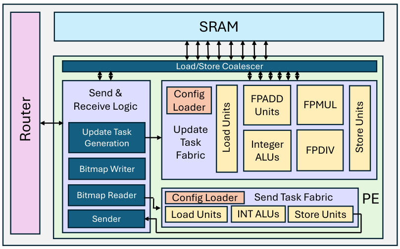
Courtney Golden, Axel Feldmann, Joel S. Emer, Daniel Sanchez. Quartz: A Reconfigurable, Distributed-Memory Accelerator for Sparse Applications. MICRO 2025. DOI: https://doi.org/10.1145/3725843.3756035. Version: Exact frozen author-hosted ACM-layout conference manuscript; metadata timestamp does not establish a publication version; publisher binary equivalence not asserted. Source: https://people.csail.mit.edu/emer/media/papers/2020s/2025/2025.10.micro.quartz.pdf. CC BY 4.0: https://creativecommons.org/licenses/by/4.0/. Whole figures cropped from this exact PDF and rasterized at 240 dpi; captions excluded, all figure content unchanged. No endorsement implied. Whole figure cropped from the specified source PDF and rasterized at 240 dpi; numbered caption excluded, figure content unchanged.
原文物理页 7 · CC BY 4.0
Quartz · MICRO 2025 · 图 8
可重构计算单元互连图
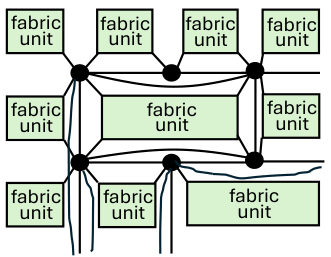
Courtney Golden, Axel Feldmann, Joel S. Emer, Daniel Sanchez. Quartz: A Reconfigurable, Distributed-Memory Accelerator for Sparse Applications. MICRO 2025. DOI: https://doi.org/10.1145/3725843.3756035. Version: Exact frozen author-hosted ACM-layout conference manuscript; metadata timestamp does not establish a publication version; publisher binary equivalence not asserted. Source: https://people.csail.mit.edu/emer/media/papers/2020s/2025/2025.10.micro.quartz.pdf. CC BY 4.0: https://creativecommons.org/licenses/by/4.0/. Whole figures cropped from this exact PDF and rasterized at 240 dpi; captions excluded, all figure content unchanged. No endorsement implied. Whole figure cropped from the specified source PDF and rasterized at 240 dpi; numbered caption excluded, figure content unchanged.
原文物理页 7 · CC BY 4.0
Quartz · MICRO 2025 · 图 9
广度优先搜索数据依赖图
Courtney Golden, Axel Feldmann, Joel S. Emer, Daniel Sanchez. Quartz: A Reconfigurable, Distributed-Memory Accelerator for Sparse Applications. MICRO 2025. DOI: https://doi.org/10.1145/3725843.3756035. Version: Exact frozen author-hosted ACM-layout conference manuscript; metadata timestamp does not establish a publication version; publisher binary equivalence not asserted. Source: https://people.csail.mit.edu/emer/media/papers/2020s/2025/2025.10.micro.quartz.pdf. CC BY 4.0: https://creativecommons.org/licenses/by/4.0/. Whole figures cropped from this exact PDF and rasterized at 240 dpi; captions excluded, all figure content unchanged. No endorsement implied. Whole figure cropped from the specified source PDF and rasterized at 240 dpi; numbered caption excluded, figure content unchanged.
原文物理页 8 · CC BY 4.0
Quartz · MICRO 2025 · 图 10
行分区与轮转分区对比图
Courtney Golden, Axel Feldmann, Joel S. Emer, Daniel Sanchez. Quartz: A Reconfigurable, Distributed-Memory Accelerator for Sparse Applications. MICRO 2025. DOI: https://doi.org/10.1145/3725843.3756035. Version: Exact frozen author-hosted ACM-layout conference manuscript; metadata timestamp does not establish a publication version; publisher binary equivalence not asserted. Source: https://people.csail.mit.edu/emer/media/papers/2020s/2025/2025.10.micro.quartz.pdf. CC BY 4.0: https://creativecommons.org/licenses/by/4.0/. Whole figures cropped from this exact PDF and rasterized at 240 dpi; captions excluded, all figure content unchanged. No endorsement implied. Whole figure cropped from the specified source PDF and rasterized at 240 dpi; numbered caption excluded, figure content unchanged.
原文物理页 8 · CC BY 4.0
Quartz · MICRO 2025 · 图 11
超图分区示意图
Courtney Golden, Axel Feldmann, Joel S. Emer, Daniel Sanchez. Quartz: A Reconfigurable, Distributed-Memory Accelerator for Sparse Applications. MICRO 2025. DOI: https://doi.org/10.1145/3725843.3756035. Version: Exact frozen author-hosted ACM-layout conference manuscript; metadata timestamp does not establish a publication version; publisher binary equivalence not asserted. Source: https://people.csail.mit.edu/emer/media/papers/2020s/2025/2025.10.micro.quartz.pdf. CC BY 4.0: https://creativecommons.org/licenses/by/4.0/. Whole figures cropped from this exact PDF and rasterized at 240 dpi; captions excluded, all figure content unchanged. No endorsement implied. Whole figure cropped from the specified source PDF and rasterized at 240 dpi; numbered caption excluded, figure content unchanged.
原文物理页 9 · CC BY 4.0
Quartz · MICRO 2025 · 图 12
两阶段图分区流程图
Courtney Golden, Axel Feldmann, Joel S. Emer, Daniel Sanchez. Quartz: A Reconfigurable, Distributed-Memory Accelerator for Sparse Applications. MICRO 2025. DOI: https://doi.org/10.1145/3725843.3756035. Version: Exact frozen author-hosted ACM-layout conference manuscript; metadata timestamp does not establish a publication version; publisher binary equivalence not asserted. Source: https://people.csail.mit.edu/emer/media/papers/2020s/2025/2025.10.micro.quartz.pdf. CC BY 4.0: https://creativecommons.org/licenses/by/4.0/. Whole figures cropped from this exact PDF and rasterized at 240 dpi; captions excluded, all figure content unchanged. No endorsement implied. Whole figure cropped from the specified source PDF and rasterized at 240 dpi; numbered caption excluded, figure content unchanged.
原文物理页 9 · CC BY 4.0
RTeAAL Sim · ASPLOS 2026 · 图 1
RTL到数据流与代码转换图
Yan Zhu, Boru Chen, Christopher W. Fletcher, Nandeeka Nayak. RTeAAL Sim: Using Tensor Algebra to Represent and Accelerate RTL Simulation (Extended Version). ASPLOS 2026; arXiv extended version. DOI: https://doi.org/10.1145/3779212.3790214. Version: arXiv:2601.18140v1, 26 January 2026, Extended Version; 20-page author manuscript, not publisher PDF. Source: https://arxiv.org/pdf/2601.18140v1. CC BY 4.0: https://creativecommons.org/licenses/by/4.0/. Whole figures cropped from this exact PDF and rasterized at 240 dpi; captions excluded, all figure content unchanged. No endorsement implied. Whole figure cropped from the specified source PDF and rasterized at 240 dpi; numbered caption excluded, figure content unchanged.
原文物理页 2 · CC BY 4.0
RTeAAL Sim · ASPLOS 2026 · 图 2
稀疏矩阵纤维树表示图
Yan Zhu, Boru Chen, Christopher W. Fletcher, Nandeeka Nayak. RTeAAL Sim: Using Tensor Algebra to Represent and Accelerate RTL Simulation (Extended Version). ASPLOS 2026; arXiv extended version. DOI: https://doi.org/10.1145/3779212.3790214. Version: arXiv:2601.18140v1, 26 January 2026, Extended Version; 20-page author manuscript, not publisher PDF. Source: https://arxiv.org/pdf/2601.18140v1. CC BY 4.0: https://creativecommons.org/licenses/by/4.0/. Whole figures cropped from this exact PDF and rasterized at 240 dpi; captions excluded, all figure content unchanged. No endorsement implied. Whole figure cropped from the specified source PDF and rasterized at 240 dpi; numbered caption excluded, figure content unchanged.
原文物理页 2 · CC BY 4.0
RTeAAL Sim · ASPLOS 2026 · 图 3
扩展Einsum计算分解图
Yan Zhu, Boru Chen, Christopher W. Fletcher, Nandeeka Nayak. RTeAAL Sim: Using Tensor Algebra to Represent and Accelerate RTL Simulation (Extended Version). ASPLOS 2026; arXiv extended version. DOI: https://doi.org/10.1145/3779212.3790214. Version: arXiv:2601.18140v1, 26 January 2026, Extended Version; 20-page author manuscript, not publisher PDF. Source: https://arxiv.org/pdf/2601.18140v1. CC BY 4.0: https://creativecommons.org/licenses/by/4.0/. Whole figures cropped from this exact PDF and rasterized at 240 dpi; captions excluded, all figure content unchanged. No endorsement implied. Whole figure cropped from the specified source PDF and rasterized at 240 dpi; numbered caption excluded, figure content unchanged.
原文物理页 3 · CC BY 4.0
RTeAAL Sim · ASPLOS 2026 · 图 4
张量筛选与纤维树运算图
Yan Zhu, Boru Chen, Christopher W. Fletcher, Nandeeka Nayak. RTeAAL Sim: Using Tensor Algebra to Represent and Accelerate RTL Simulation (Extended Version). ASPLOS 2026; arXiv extended version. DOI: https://doi.org/10.1145/3779212.3790214. Version: arXiv:2601.18140v1, 26 January 2026, Extended Version; 20-page author manuscript, not publisher PDF. Source: https://arxiv.org/pdf/2601.18140v1. CC BY 4.0: https://creativecommons.org/licenses/by/4.0/. Whole figures cropped from this exact PDF and rasterized at 240 dpi; captions excluded, all figure content unchanged. No endorsement implied. Whole figure cropped from the specified source PDF and rasterized at 240 dpi; numbered caption excluded, figure content unchanged.
原文物理页 3 · CC BY 4.0
RTeAAL Sim · ASPLOS 2026 · 图 6
稀疏张量格式配置图
Yan Zhu, Boru Chen, Christopher W. Fletcher, Nandeeka Nayak. RTeAAL Sim: Using Tensor Algebra to Represent and Accelerate RTL Simulation (Extended Version). ASPLOS 2026; arXiv extended version. DOI: https://doi.org/10.1145/3779212.3790214. Version: arXiv:2601.18140v1, 26 January 2026, Extended Version; 20-page author manuscript, not publisher PDF. Source: https://arxiv.org/pdf/2601.18140v1. CC BY 4.0: https://creativecommons.org/licenses/by/4.0/. Whole figures cropped from this exact PDF and rasterized at 240 dpi; captions excluded, all figure content unchanged. No endorsement implied. Whole figure cropped from the specified source PDF and rasterized at 240 dpi; numbered caption excluded, figure content unchanged.
原文物理页 4 · CC BY 4.0
RTeAAL Sim · ASPLOS 2026 · 图 9
单层乘法数据流示意图
Yan Zhu, Boru Chen, Christopher W. Fletcher, Nandeeka Nayak. RTeAAL Sim: Using Tensor Algebra to Represent and Accelerate RTL Simulation (Extended Version). ASPLOS 2026; arXiv extended version. DOI: https://doi.org/10.1145/3779212.3790214. Version: arXiv:2601.18140v1, 26 January 2026, Extended Version; 20-page author manuscript, not publisher PDF. Source: https://arxiv.org/pdf/2601.18140v1. CC BY 4.0: https://creativecommons.org/licenses/by/4.0/. Whole figures cropped from this exact PDF and rasterized at 240 dpi; captions excluded, all figure content unchanged. No endorsement implied. Whole figure cropped from the specified source PDF and rasterized at 240 dpi; numbered caption excluded, figure content unchanged.
原文物理页 6 · CC BY 4.0
RTeAAL Sim · ASPLOS 2026 · 图 10
数据流张量编码示意图
Yan Zhu, Boru Chen, Christopher W. Fletcher, Nandeeka Nayak. RTeAAL Sim: Using Tensor Algebra to Represent and Accelerate RTL Simulation (Extended Version). ASPLOS 2026; arXiv extended version. DOI: https://doi.org/10.1145/3779212.3790214. Version: arXiv:2601.18140v1, 26 January 2026, Extended Version; 20-page author manuscript, not publisher PDF. Source: https://arxiv.org/pdf/2601.18140v1. CC BY 4.0: https://creativecommons.org/licenses/by/4.0/. Whole figures cropped from this exact PDF and rasterized at 240 dpi; captions excluded, all figure content unchanged. No endorsement implied. Whole figure cropped from the specified source PDF and rasterized at 240 dpi; numbered caption excluded, figure content unchanged.
原文物理页 6 · CC BY 4.0
RTeAAL Sim · ASPLOS 2026 · 图 11
数据流分层预处理图
Yan Zhu, Boru Chen, Christopher W. Fletcher, Nandeeka Nayak. RTeAAL Sim: Using Tensor Algebra to Represent and Accelerate RTL Simulation (Extended Version). ASPLOS 2026; arXiv extended version. DOI: https://doi.org/10.1145/3779212.3790214. Version: arXiv:2601.18140v1, 26 January 2026, Extended Version; 20-page author manuscript, not publisher PDF. Source: https://arxiv.org/pdf/2601.18140v1. CC BY 4.0: https://creativecommons.org/licenses/by/4.0/. Whole figures cropped from this exact PDF and rasterized at 240 dpi; captions excluded, all figure content unchanged. No endorsement implied. Whole figure cropped from the specified source PDF and rasterized at 240 dpi; numbered caption excluded, figure content unchanged.
原文物理页 7 · CC BY 4.0
RTeAAL Sim · ASPLOS 2026 · 图 12
张量格式优化对比图
Yan Zhu, Boru Chen, Christopher W. Fletcher, Nandeeka Nayak. RTeAAL Sim: Using Tensor Algebra to Represent and Accelerate RTL Simulation (Extended Version). ASPLOS 2026; arXiv extended version. DOI: https://doi.org/10.1145/3779212.3790214. Version: arXiv:2601.18140v1, 26 January 2026, Extended Version; 20-page author manuscript, not publisher PDF. Source: https://arxiv.org/pdf/2601.18140v1. CC BY 4.0: https://creativecommons.org/licenses/by/4.0/. Whole figures cropped from this exact PDF and rasterized at 240 dpi; captions excluded, all figure content unchanged. No endorsement implied. Whole figure cropped from the specified source PDF and rasterized at 240 dpi; numbered caption excluded, figure content unchanged.
原文物理页 8 · CC BY 4.0
RTeAAL Sim · ASPLOS 2026 · 图 13
纤维树到数组存储映射图
Yan Zhu, Boru Chen, Christopher W. Fletcher, Nandeeka Nayak. RTeAAL Sim: Using Tensor Algebra to Represent and Accelerate RTL Simulation (Extended Version). ASPLOS 2026; arXiv extended version. DOI: https://doi.org/10.1145/3779212.3790214. Version: arXiv:2601.18140v1, 26 January 2026, Extended Version; 20-page author manuscript, not publisher PDF. Source: https://arxiv.org/pdf/2601.18140v1. CC BY 4.0: https://creativecommons.org/licenses/by/4.0/. Whole figures cropped from this exact PDF and rasterized at 240 dpi; captions excluded, all figure content unchanged. No endorsement implied. Whole figure cropped from the specified source PDF and rasterized at 240 dpi; numbered caption excluded, figure content unchanged.
原文物理页 8 · CC BY 4.0
RTeAAL Sim · ASPLOS 2026 · 图 14
张量仿真编译工作流图
Yan Zhu, Boru Chen, Christopher W. Fletcher, Nandeeka Nayak. RTeAAL Sim: Using Tensor Algebra to Represent and Accelerate RTL Simulation (Extended Version). ASPLOS 2026; arXiv extended version. DOI: https://doi.org/10.1145/3779212.3790214. Version: arXiv:2601.18140v1, 26 January 2026, Extended Version; 20-page author manuscript, not publisher PDF. Source: https://arxiv.org/pdf/2601.18140v1. CC BY 4.0: https://creativecommons.org/licenses/by/4.0/. Whole figures cropped from this exact PDF and rasterized at 240 dpi; captions excluded, all figure content unchanged. No endorsement implied. Whole figure cropped from the specified source PDF and rasterized at 240 dpi; numbered caption excluded, figure content unchanged.
原文物理页 10 · CC BY 4.0
CHERI-SIMT · ASPLOS 2026 · 图 1
GPU越界读取代码示例图
Matthew Naylor, Alexandre Joannou, A. Theodore Markettos, Paul Metzger, Simon W. Moore, Timothy M. Jones. CHERI-SIMT: Implementing Capability Memory Protection in GPUs. ASPLOS 2026, Volume 1. DOI: https://doi.org/10.1145/3760250.3762234. Version: Exact frozen author-hosted ACM-layout conference manuscript; publisher binary equivalence not asserted. Source: https://www.cl.cam.ac.uk/~tmj32/papers/docs/naylor26-asplos.pdf. CC BY 4.0: https://creativecommons.org/licenses/by/4.0/. Whole figures cropped from this exact PDF and rasterized at 240 dpi; captions excluded, all figure content unchanged. No endorsement implied. Whole figure cropped from the specified source PDF and rasterized at 240 dpi; numbered caption excluded, figure content unchanged.
原文物理页 2 · CC BY 4.0
CHERI-SIMT · ASPLOS 2026 · 图 3
直方图并行内核代码图
Matthew Naylor, Alexandre Joannou, A. Theodore Markettos, Paul Metzger, Simon W. Moore, Timothy M. Jones. CHERI-SIMT: Implementing Capability Memory Protection in GPUs. ASPLOS 2026, Volume 1. DOI: https://doi.org/10.1145/3760250.3762234. Version: Exact frozen author-hosted ACM-layout conference manuscript; publisher binary equivalence not asserted. Source: https://www.cl.cam.ac.uk/~tmj32/papers/docs/naylor26-asplos.pdf. CC BY 4.0: https://creativecommons.org/licenses/by/4.0/. Whole figures cropped from this exact PDF and rasterized at 240 dpi; captions excluded, all figure content unchanged. No endorsement implied. Whole figure cropped from the specified source PDF and rasterized at 240 dpi; numbered caption excluded, figure content unchanged.
原文物理页 4 · CC BY 4.0
CHERI-SIMT · ASPLOS 2026 · 图 4
能力指令分类图
Matthew Naylor, Alexandre Joannou, A. Theodore Markettos, Paul Metzger, Simon W. Moore, Timothy M. Jones. CHERI-SIMT: Implementing Capability Memory Protection in GPUs. ASPLOS 2026, Volume 1. DOI: https://doi.org/10.1145/3760250.3762234. Version: Exact frozen author-hosted ACM-layout conference manuscript; publisher binary equivalence not asserted. Source: https://www.cl.cam.ac.uk/~tmj32/papers/docs/naylor26-asplos.pdf. CC BY 4.0: https://creativecommons.org/licenses/by/4.0/. Whole figures cropped from this exact PDF and rasterized at 240 dpi; captions excluded, all figure content unchanged. No endorsement implied. Whole figure cropped from the specified source PDF and rasterized at 240 dpi; numbered caption excluded, figure content unchanged.
原文物理页 5 · CC BY 4.0
CHERI-SIMT · ASPLOS 2026 · 图 8
能力检查流水线扩展图
Matthew Naylor, Alexandre Joannou, A. Theodore Markettos, Paul Metzger, Simon W. Moore, Timothy M. Jones. CHERI-SIMT: Implementing Capability Memory Protection in GPUs. ASPLOS 2026, Volume 1. DOI: https://doi.org/10.1145/3760250.3762234. Version: Exact frozen author-hosted ACM-layout conference manuscript; publisher binary equivalence not asserted. Source: https://www.cl.cam.ac.uk/~tmj32/papers/docs/naylor26-asplos.pdf. CC BY 4.0: https://creativecommons.org/licenses/by/4.0/. Whole figures cropped from this exact PDF and rasterized at 240 dpi; captions excluded, all figure content unchanged. No endorsement implied. Whole figure cropped from the specified source PDF and rasterized at 240 dpi; numbered caption excluded, figure content unchanged.
原文物理页 9 · CC BY 4.0
CHERI-SIMT · ASPLOS 2026 · 图 9
GPU与主机评估系统图
Matthew Naylor, Alexandre Joannou, A. Theodore Markettos, Paul Metzger, Simon W. Moore, Timothy M. Jones. CHERI-SIMT: Implementing Capability Memory Protection in GPUs. ASPLOS 2026, Volume 1. DOI: https://doi.org/10.1145/3760250.3762234. Version: Exact frozen author-hosted ACM-layout conference manuscript; publisher binary equivalence not asserted. Source: https://www.cl.cam.ac.uk/~tmj32/papers/docs/naylor26-asplos.pdf. CC BY 4.0: https://creativecommons.org/licenses/by/4.0/. Whole figures cropped from this exact PDF and rasterized at 240 dpi; captions excluded, all figure content unchanged. No endorsement implied. Whole figure cropped from the specified source PDF and rasterized at 240 dpi; numbered caption excluded, figure content unchanged.
原文物理页 9 · CC BY 4.0
Virtuoso · ASPLOS 2025 / arXiv v2 · 图 4
轻量内核仿真系统架构图
Konstantinos Kanellopoulos, Konstantinos Sgouras, F. Nisa Bostanci, Andreas Kosmas Kakolyris, Berkin Kerim Konar, Rahul Bera, Mohammad Sadrosadati, Rakesh Kumar, Nandita Vijaykumar, Onur Mutlu. Virtuoso: Enabling Fast and Accurate Virtual Memory Research via an Imitation-based Operating System Simulation Methodology. ASPLOS 2025; arXiv author version. DOI: https://doi.org/10.1145/3676641.3716027. Version: arXiv:2403.04635v2, 27 March 2025, 22-page author manuscript; publisher binary equivalence not asserted. Source: https://arxiv.org/pdf/2403.04635v2. CC0 1.0 Universal: https://creativecommons.org/publicdomain/zero/1.0/. Whole figures cropped from this exact PDF and rasterized at 240 dpi; captions excluded, all figure content unchanged. No endorsement implied. Whole figure cropped from the specified source PDF and rasterized at 240 dpi; numbered caption excluded, figure content unchanged.
原文物理页 6 · CC0 1.0
Virtuoso · ASPLOS 2025 / arXiv v2 · 图 5
缺页处理仿真工作流图
Konstantinos Kanellopoulos, Konstantinos Sgouras, F. Nisa Bostanci, Andreas Kosmas Kakolyris, Berkin Kerim Konar, Rahul Bera, Mohammad Sadrosadati, Rakesh Kumar, Nandita Vijaykumar, Onur Mutlu. Virtuoso: Enabling Fast and Accurate Virtual Memory Research via an Imitation-based Operating System Simulation Methodology. ASPLOS 2025; arXiv author version. DOI: https://doi.org/10.1145/3676641.3716027. Version: arXiv:2403.04635v2, 27 March 2025, 22-page author manuscript; publisher binary equivalence not asserted. Source: https://arxiv.org/pdf/2403.04635v2. CC0 1.0 Universal: https://creativecommons.org/publicdomain/zero/1.0/. Whole figures cropped from this exact PDF and rasterized at 240 dpi; captions excluded, all figure content unchanged. No endorsement implied. Whole figure cropped from the specified source PDF and rasterized at 240 dpi; numbered caption excluded, figure content unchanged.
原文物理页 8 · CC0 1.0
Virtuoso · ASPLOS 2025 / arXiv v2 · 图 6
内存管理决策流程图
Konstantinos Kanellopoulos, Konstantinos Sgouras, F. Nisa Bostanci, Andreas Kosmas Kakolyris, Berkin Kerim Konar, Rahul Bera, Mohammad Sadrosadati, Rakesh Kumar, Nandita Vijaykumar, Onur Mutlu. Virtuoso: Enabling Fast and Accurate Virtual Memory Research via an Imitation-based Operating System Simulation Methodology. ASPLOS 2025; arXiv author version. DOI: https://doi.org/10.1145/3676641.3716027. Version: arXiv:2403.04635v2, 27 March 2025, 22-page author manuscript; publisher binary equivalence not asserted. Source: https://arxiv.org/pdf/2403.04635v2. CC0 1.0 Universal: https://creativecommons.org/publicdomain/zero/1.0/. Whole figures cropped from this exact PDF and rasterized at 240 dpi; captions excluded, all figure content unchanged. No endorsement implied. Whole figure cropped from the specified source PDF and rasterized at 240 dpi; numbered caption excluded, figure content unchanged.
原文物理页 8 · CC0 1.0
Virtuoso · ASPLOS 2025 / arXiv v2 · 图 7
轨迹驱动模拟器集成图
Konstantinos Kanellopoulos, Konstantinos Sgouras, F. Nisa Bostanci, Andreas Kosmas Kakolyris, Berkin Kerim Konar, Rahul Bera, Mohammad Sadrosadati, Rakesh Kumar, Nandita Vijaykumar, Onur Mutlu. Virtuoso: Enabling Fast and Accurate Virtual Memory Research via an Imitation-based Operating System Simulation Methodology. ASPLOS 2025; arXiv author version. DOI: https://doi.org/10.1145/3676641.3716027. Version: arXiv:2403.04635v2, 27 March 2025, 22-page author manuscript; publisher binary equivalence not asserted. Source: https://arxiv.org/pdf/2403.04635v2. CC0 1.0 Universal: https://creativecommons.org/publicdomain/zero/1.0/. Whole figures cropped from this exact PDF and rasterized at 240 dpi; captions excluded, all figure content unchanged. No endorsement implied. Whole figure cropped from the specified source PDF and rasterized at 240 dpi; numbered caption excluded, figure content unchanged.
原文物理页 9 · CC0 1.0
Chassis · ASPLOS 2025 / arXiv v3 · 图 1
目标感知数值编译流程图
Brett Saiki, Jackson Brough, Jonas Regehr, Jesús Ponce, Varun Pradeep, Aditya Akhileshwaran, Zachary Tatlock, Pavel Panchekha. Target-Aware Implementation of Real Expressions. ASPLOS 2025; arXiv author version. DOI: https://doi.org/10.1145/3669940.3707277. Version: arXiv:2410.14025v3, 31 October 2024; 14-page author manuscript, not publisher PDF. Source: https://arxiv.org/pdf/2410.14025v3. CC BY 4.0: https://creativecommons.org/licenses/by/4.0/. Whole figures cropped from this exact PDF and rasterized at 240 dpi; captions excluded, all figure content unchanged. No endorsement implied. Whole figure cropped from the specified source PDF and rasterized at 240 dpi; numbered caption excluded, figure content unchanged.
原文物理页 3 · CC BY 4.0
Chassis · ASPLOS 2025 / arXiv v3 · 图 2
等价图重写步骤图
Brett Saiki, Jackson Brough, Jonas Regehr, Jesús Ponce, Varun Pradeep, Aditya Akhileshwaran, Zachary Tatlock, Pavel Panchekha. Target-Aware Implementation of Real Expressions. ASPLOS 2025; arXiv author version. DOI: https://doi.org/10.1145/3669940.3707277. Version: arXiv:2410.14025v3, 31 October 2024; 14-page author manuscript, not publisher PDF. Source: https://arxiv.org/pdf/2410.14025v3. CC BY 4.0: https://creativecommons.org/licenses/by/4.0/. Whole figures cropped from this exact PDF and rasterized at 240 dpi; captions excluded, all figure content unchanged. No endorsement implied. Whole figure cropped from the specified source PDF and rasterized at 240 dpi; numbered caption excluded, figure content unchanged.
原文物理页 4 · CC BY 4.0
Chassis · ASPLOS 2025 / arXiv v3 · 图 3
目标指令描述代码图
Brett Saiki, Jackson Brough, Jonas Regehr, Jesús Ponce, Varun Pradeep, Aditya Akhileshwaran, Zachary Tatlock, Pavel Panchekha. Target-Aware Implementation of Real Expressions. ASPLOS 2025; arXiv author version. DOI: https://doi.org/10.1145/3669940.3707277. Version: arXiv:2410.14025v3, 31 October 2024; 14-page author manuscript, not publisher PDF. Source: https://arxiv.org/pdf/2410.14025v3. CC BY 4.0: https://creativecommons.org/licenses/by/4.0/. Whole figures cropped from this exact PDF and rasterized at 240 dpi; captions excluded, all figure content unchanged. No endorsement implied. Whole figure cropped from the specified source PDF and rasterized at 240 dpi; numbered caption excluded, figure content unchanged.
原文物理页 5 · CC BY 4.0
Chassis · ASPLOS 2025 / arXiv v3 · 图 4
混合精度等价图示意图
Brett Saiki, Jackson Brough, Jonas Regehr, Jesús Ponce, Varun Pradeep, Aditya Akhileshwaran, Zachary Tatlock, Pavel Panchekha. Target-Aware Implementation of Real Expressions. ASPLOS 2025; arXiv author version. DOI: https://doi.org/10.1145/3669940.3707277. Version: arXiv:2410.14025v3, 31 October 2024; 14-page author manuscript, not publisher PDF. Source: https://arxiv.org/pdf/2410.14025v3. CC BY 4.0: https://creativecommons.org/licenses/by/4.0/. Whole figures cropped from this exact PDF and rasterized at 240 dpi; captions excluded, all figure content unchanged. No endorsement implied. Whole figure cropped from the specified source PDF and rasterized at 240 dpi; numbered caption excluded, figure content unchanged.
原文物理页 6 · CC BY 4.0
Chassis · ASPLOS 2025 / arXiv v3 · 图 5
成本机会启发式伪代码图
Brett Saiki, Jackson Brough, Jonas Regehr, Jesús Ponce, Varun Pradeep, Aditya Akhileshwaran, Zachary Tatlock, Pavel Panchekha. Target-Aware Implementation of Real Expressions. ASPLOS 2025; arXiv author version. DOI: https://doi.org/10.1145/3669940.3707277. Version: arXiv:2410.14025v3, 31 October 2024; 14-page author manuscript, not publisher PDF. Source: https://arxiv.org/pdf/2410.14025v3. CC BY 4.0: https://creativecommons.org/licenses/by/4.0/. Whole figures cropped from this exact PDF and rasterized at 240 dpi; captions excluded, all figure content unchanged. No endorsement implied. Whole figure cropped from the specified source PDF and rasterized at 240 dpi; numbered caption excluded, figure content unchanged.
原文物理页 7 · CC BY 4.0
Chassis · ASPLOS 2025 / arXiv v3 · 图 6
编译目标特性分类图
Brett Saiki, Jackson Brough, Jonas Regehr, Jesús Ponce, Varun Pradeep, Aditya Akhileshwaran, Zachary Tatlock, Pavel Panchekha. Target-Aware Implementation of Real Expressions. ASPLOS 2025; arXiv author version. DOI: https://doi.org/10.1145/3669940.3707277. Version: arXiv:2410.14025v3, 31 October 2024; 14-page author manuscript, not publisher PDF. Source: https://arxiv.org/pdf/2410.14025v3. CC BY 4.0: https://creativecommons.org/licenses/by/4.0/. Whole figures cropped from this exact PDF and rasterized at 240 dpi; captions excluded, all figure content unchanged. No endorsement implied. Whole figure cropped from the specified source PDF and rasterized at 240 dpi; numbered caption excluded, figure content unchanged.
原文物理页 8 · CC BY 4.0
STeP · ASPLOS 2026 · 图 2
片外张量流加载示意图
Gina Sohn, Genghan Zhang, Konstantin Hossfeld, Jungwoo Kim, Nathan Sobotka, Nathan Zhang, Olivia Hsu, Kunle Olukotun. Streaming Tensor Programs: A Streaming Abstraction for Dynamic Parallelism. ASPLOS 2026. DOI: https://doi.org/10.1145/3779212.3790229. Version: Exact frozen author-hosted ACM-layout 21-page conference manuscript; publisher binary equivalence not asserted. Source: https://weiya711.github.io/publications/asplos2026step.pdf. CC BY 4.0: https://creativecommons.org/licenses/by/4.0/. Whole figures cropped from this exact PDF and rasterized at 240 dpi; captions excluded, all figure content unchanged. No endorsement implied. Whole figure cropped from the specified source PDF and rasterized at 240 dpi; numbered caption excluded, figure content unchanged.
原文物理页 5 · CC BY 4.0
STeP · ASPLOS 2026 · 图 3
流缓冲与还原算子示意图
Gina Sohn, Genghan Zhang, Konstantin Hossfeld, Jungwoo Kim, Nathan Sobotka, Nathan Zhang, Olivia Hsu, Kunle Olukotun. Streaming Tensor Programs: A Streaming Abstraction for Dynamic Parallelism. ASPLOS 2026. DOI: https://doi.org/10.1145/3779212.3790229. Version: Exact frozen author-hosted ACM-layout 21-page conference manuscript; publisher binary equivalence not asserted. Source: https://weiya711.github.io/publications/asplos2026step.pdf. CC BY 4.0: https://creativecommons.org/licenses/by/4.0/. Whole figures cropped from this exact PDF and rasterized at 240 dpi; captions excluded, all figure content unchanged. No endorsement implied. Whole figure cropped from the specified source PDF and rasterized at 240 dpi; numbered caption excluded, figure content unchanged.
原文物理页 5 · CC BY 4.0
STeP · ASPLOS 2026 · 图 4
多路流重组示意图
Gina Sohn, Genghan Zhang, Konstantin Hossfeld, Jungwoo Kim, Nathan Sobotka, Nathan Zhang, Olivia Hsu, Kunle Olukotun. Streaming Tensor Programs: A Streaming Abstraction for Dynamic Parallelism. ASPLOS 2026. DOI: https://doi.org/10.1145/3779212.3790229. Version: Exact frozen author-hosted ACM-layout 21-page conference manuscript; publisher binary equivalence not asserted. Source: https://weiya711.github.io/publications/asplos2026step.pdf. CC BY 4.0: https://creativecommons.org/licenses/by/4.0/. Whole figures cropped from this exact PDF and rasterized at 240 dpi; captions excluded, all figure content unchanged. No endorsement implied. Whole figure cropped from the specified source PDF and rasterized at 240 dpi; numbered caption excluded, figure content unchanged.
原文物理页 6 · CC BY 4.0
STeP · ASPLOS 2026 · 图 5
动态流扩展示意图
Gina Sohn, Genghan Zhang, Konstantin Hossfeld, Jungwoo Kim, Nathan Sobotka, Nathan Zhang, Olivia Hsu, Kunle Olukotun. Streaming Tensor Programs: A Streaming Abstraction for Dynamic Parallelism. ASPLOS 2026. DOI: https://doi.org/10.1145/3779212.3790229. Version: Exact frozen author-hosted ACM-layout 21-page conference manuscript; publisher binary equivalence not asserted. Source: https://weiya711.github.io/publications/asplos2026step.pdf. CC BY 4.0: https://creativecommons.org/licenses/by/4.0/. Whole figures cropped from this exact PDF and rasterized at 240 dpi; captions excluded, all figure content unchanged. No endorsement implied. Whole figure cropped from the specified source PDF and rasterized at 240 dpi; numbered caption excluded, figure content unchanged.
原文物理页 6 · CC BY 4.0
STeP · ASPLOS 2026 · 图 6
混合专家张量执行流程图
Gina Sohn, Genghan Zhang, Konstantin Hossfeld, Jungwoo Kim, Nathan Sobotka, Nathan Zhang, Olivia Hsu, Kunle Olukotun. Streaming Tensor Programs: A Streaming Abstraction for Dynamic Parallelism. ASPLOS 2026. DOI: https://doi.org/10.1145/3779212.3790229. Version: Exact frozen author-hosted ACM-layout 21-page conference manuscript; publisher binary equivalence not asserted. Source: https://weiya711.github.io/publications/asplos2026step.pdf. CC BY 4.0: https://creativecommons.org/licenses/by/4.0/. Whole figures cropped from this exact PDF and rasterized at 240 dpi; captions excluded, all figure content unchanged. No endorsement implied. Whole figure cropped from the specified source PDF and rasterized at 240 dpi; numbered caption excluded, figure content unchanged.
原文物理页 7 · CC BY 4.0
STeP · ASPLOS 2026 · 图 7
混合专家流算子计算图
Gina Sohn, Genghan Zhang, Konstantin Hossfeld, Jungwoo Kim, Nathan Sobotka, Nathan Zhang, Olivia Hsu, Kunle Olukotun. Streaming Tensor Programs: A Streaming Abstraction for Dynamic Parallelism. ASPLOS 2026. DOI: https://doi.org/10.1145/3779212.3790229. Version: Exact frozen author-hosted ACM-layout 21-page conference manuscript; publisher binary equivalence not asserted. Source: https://weiya711.github.io/publications/asplos2026step.pdf. CC BY 4.0: https://creativecommons.org/licenses/by/4.0/. Whole figures cropped from this exact PDF and rasterized at 240 dpi; captions excluded, all figure content unchanged. No endorsement implied. Whole figure cropped from the specified source PDF and rasterized at 240 dpi; numbered caption excluded, figure content unchanged.
原文物理页 7 · CC BY 4.0
STeP · ASPLOS 2026 · 图 11
专家配置时分复用计算图
Gina Sohn, Genghan Zhang, Konstantin Hossfeld, Jungwoo Kim, Nathan Sobotka, Nathan Zhang, Olivia Hsu, Kunle Olukotun. Streaming Tensor Programs: A Streaming Abstraction for Dynamic Parallelism. ASPLOS 2026. DOI: https://doi.org/10.1145/3779212.3790229. Version: Exact frozen author-hosted ACM-layout 21-page conference manuscript; publisher binary equivalence not asserted. Source: https://weiya711.github.io/publications/asplos2026step.pdf. CC BY 4.0: https://creativecommons.org/licenses/by/4.0/. Whole figures cropped from this exact PDF and rasterized at 240 dpi; captions excluded, all figure content unchanged. No endorsement implied. Whole figure cropped from the specified source PDF and rasterized at 240 dpi; numbered caption excluded, figure content unchanged.
原文物理页 11 · CC BY 4.0
STeP · ASPLOS 2026 · 图 16
动态并行注意力计算图
Gina Sohn, Genghan Zhang, Konstantin Hossfeld, Jungwoo Kim, Nathan Sobotka, Nathan Zhang, Olivia Hsu, Kunle Olukotun. Streaming Tensor Programs: A Streaming Abstraction for Dynamic Parallelism. ASPLOS 2026. DOI: https://doi.org/10.1145/3779212.3790229. Version: Exact frozen author-hosted ACM-layout 21-page conference manuscript; publisher binary equivalence not asserted. Source: https://weiya711.github.io/publications/asplos2026step.pdf. CC BY 4.0: https://creativecommons.org/licenses/by/4.0/. Whole figures cropped from this exact PDF and rasterized at 240 dpi; captions excluded, all figure content unchanged. No endorsement implied. Whole figure cropped from the specified source PDF and rasterized at 240 dpi; numbered caption excluded, figure content unchanged.
原文物理页 13 · CC BY 4.0
Rights / AssertSolver · DAC 2025 · 图 1
断言失败人工定位示意
Jie Zhou, Youshu Ji, Ning Wang, Yuchen Hu, Xinyao Jiao, Bingkun Yao, Xinwei Fang, Shuai Zhao, Nan Guan, and Zhe Jiang. Insights from Rights and Wrongs: A Large Language Model for Solving Assertion Failures in RTL Design. DAC 2025. Author manuscript arXiv:2503.04057v1, 6 March 2025. DOI: https://doi.org/10.1109/DAC63849.2025.11133100. Source: https://arxiv.org/pdf/2503.04057v1. CC BY 2.5: https://creativecommons.org/licenses/by/2.5/, evidenced by the matching v1 accepted manuscript at https://eprints.whiterose.ac.uk/id/eprint/225387/. Whole figures cropped from the exact historical PDF and rasterized at 240 dpi; captions excluded and figure content unchanged. No endorsement implied. Whole figure cropped from the specified source PDF and rasterized at 240 dpi; numbered caption excluded, figure content unchanged.
原文物理页 1 · CC BY 2.5
ATR · MICRO 2025 · 图 2
推测释放错误复用示例
Yinyuan Zhao, Surim Oh, Mingsheng Xu, Heiner Litz. ATR: Out-of-Order Register Release Exploiting Atomic Regions. MICRO 2025. DOI: https://doi.org/10.1145/3725843.3756135. Version: Frozen 14-page author-hosted MICRO 2025 conference-layout PDF, printed pages 705–718. Source: https://hlitz.github.io/papers/atr.pdf. CC BY 4.0: https://creativecommons.org/licenses/by/4.0/. Whole figures cropped from this exact PDF and rasterized at 240 dpi; captions excluded, all figure content unchanged. No endorsement implied. Whole figure cropped from the specified source PDF and rasterized at 240 dpi; numbered caption excluded, figure content unchanged.
原文物理页 3 · CC BY 4.0
ATR · MICRO 2025 · 图 3
寄存器生命周期时序
Yinyuan Zhao, Surim Oh, Mingsheng Xu, Heiner Litz. ATR: Out-of-Order Register Release Exploiting Atomic Regions. MICRO 2025. DOI: https://doi.org/10.1145/3725843.3756135. Version: Frozen 14-page author-hosted MICRO 2025 conference-layout PDF, printed pages 705–718. Source: https://hlitz.github.io/papers/atr.pdf. CC BY 4.0: https://creativecommons.org/licenses/by/4.0/. Whole figures cropped from this exact PDF and rasterized at 240 dpi; captions excluded, all figure content unchanged. No endorsement implied. Whole figure cropped from the specified source PDF and rasterized at 240 dpi; numbered caption excluded, figure content unchanged.
原文物理页 3 · CC BY 4.0
ATR · MICRO 2025 · 图 5
指令执行周期实例
含 Re／Ex／Cm／Pr 周期数字的机制实例，归为非实验图，不表示没有数值。
Yinyuan Zhao, Surim Oh, Mingsheng Xu, Heiner Litz. ATR: Out-of-Order Register Release Exploiting Atomic Regions. MICRO 2025. DOI: https://doi.org/10.1145/3725843.3756135. Version: Frozen 14-page author-hosted MICRO 2025 conference-layout PDF, printed pages 705–718. Source: https://hlitz.github.io/papers/atr.pdf. CC BY 4.0: https://creativecommons.org/licenses/by/4.0/. Whole figures cropped from this exact PDF and rasterized at 240 dpi; captions excluded, all figure content unchanged. No endorsement implied. Whole figure cropped from the specified source PDF and rasterized at 240 dpi; numbered caption excluded, figure content unchanged.
原文物理页 4 · CC BY 4.0
ATR · MICRO 2025 · 图 7
寄存器提前释放架构
Yinyuan Zhao, Surim Oh, Mingsheng Xu, Heiner Litz. ATR: Out-of-Order Register Release Exploiting Atomic Regions. MICRO 2025. DOI: https://doi.org/10.1145/3725843.3756135. Version: Frozen 14-page author-hosted MICRO 2025 conference-layout PDF, printed pages 705–718. Source: https://hlitz.github.io/papers/atr.pdf. CC BY 4.0: https://creativecommons.org/licenses/by/4.0/. Whole figures cropped from this exact PDF and rasterized at 240 dpi; captions excluded, all figure content unchanged. No endorsement implied. Whole figure cropped from the specified source PDF and rasterized at 240 dpi; numbered caption excluded, figure content unchanged.
原文物理页 6 · CC BY 4.0
ATR · MICRO 2025 · 图 8
原子区域提前释放示例
Yinyuan Zhao, Surim Oh, Mingsheng Xu, Heiner Litz. ATR: Out-of-Order Register Release Exploiting Atomic Regions. MICRO 2025. DOI: https://doi.org/10.1145/3725843.3756135. Version: Frozen 14-page author-hosted MICRO 2025 conference-layout PDF, printed pages 705–718. Source: https://hlitz.github.io/papers/atr.pdf. CC BY 4.0: https://creativecommons.org/licenses/by/4.0/. Whole figures cropped from this exact PDF and rasterized at 240 dpi; captions excluded, all figure content unchanged. No endorsement implied. Whole figure cropped from the specified source PDF and rasterized at 240 dpi; numbered caption excluded, figure content unchanged.
原文物理页 6 · CC BY 4.0
ATR · MICRO 2025 · 图 9
批量标记流水线
Yinyuan Zhao, Surim Oh, Mingsheng Xu, Heiner Litz. ATR: Out-of-Order Register Release Exploiting Atomic Regions. MICRO 2025. DOI: https://doi.org/10.1145/3725843.3756135. Version: Frozen 14-page author-hosted MICRO 2025 conference-layout PDF, printed pages 705–718. Source: https://hlitz.github.io/papers/atr.pdf. CC BY 4.0: https://creativecommons.org/licenses/by/4.0/. Whole figures cropped from this exact PDF and rasterized at 240 dpi; captions excluded, all figure content unchanged. No endorsement implied. Whole figure cropped from the specified source PDF and rasterized at 240 dpi; numbered caption excluded, figure content unchanged.
原文物理页 7 · CC BY 4.0
LoopFrog · MICRO 2025 · 图 2
循环结构与并行执行示意
Márton Erdős, Utpal Bora, Akshay Bhosale, Bob Lytton, Ali M. Zaidi, Alexandra W. Chadwick, Yuxin Guo, Giacomo Gabrielli, Timothy M. Jones. LoopFrog: In-Core Hint-Based Loop Parallelization. MICRO 2025. DOI: https://doi.org/10.1145/3725843.3756051. Version: Frozen 14-page MICRO 2025 author manuscript, numbered 1–14. Source: https://www.cl.cam.ac.uk/~tmj32/papers/docs/erdos25-micro.pdf. CC BY 4.0: https://creativecommons.org/licenses/by/4.0/. Whole figures cropped from this exact PDF and rasterized at 240 dpi; captions excluded, all figure content unchanged. No endorsement implied. Whole figure cropped from the specified source PDF and rasterized at 240 dpi; numbered caption excluded, figure content unchanged.
原文物理页 3 · CC BY 4.0
LoopFrog · MICRO 2025 · 图 3
处理器流水线改造架构
Márton Erdős, Utpal Bora, Akshay Bhosale, Bob Lytton, Ali M. Zaidi, Alexandra W. Chadwick, Yuxin Guo, Giacomo Gabrielli, Timothy M. Jones. LoopFrog: In-Core Hint-Based Loop Parallelization. MICRO 2025. DOI: https://doi.org/10.1145/3725843.3756051. Version: Frozen 14-page MICRO 2025 author manuscript, numbered 1–14. Source: https://www.cl.cam.ac.uk/~tmj32/papers/docs/erdos25-micro.pdf. CC BY 4.0: https://creativecommons.org/licenses/by/4.0/. Whole figures cropped from this exact PDF and rasterized at 240 dpi; captions excluded, all figure content unchanged. No endorsement implied. Whole figure cropped from the specified source PDF and rasterized at 240 dpi; numbered caption excluded, figure content unchanged.
原文物理页 5 · CC BY 4.0
LoopFrog · MICRO 2025 · 图 4
推测状态缓冲区架构
Márton Erdős, Utpal Bora, Akshay Bhosale, Bob Lytton, Ali M. Zaidi, Alexandra W. Chadwick, Yuxin Guo, Giacomo Gabrielli, Timothy M. Jones. LoopFrog: In-Core Hint-Based Loop Parallelization. MICRO 2025. DOI: https://doi.org/10.1145/3725843.3756051. Version: Frozen 14-page MICRO 2025 author manuscript, numbered 1–14. Source: https://www.cl.cam.ac.uk/~tmj32/papers/docs/erdos25-micro.pdf. CC BY 4.0: https://creativecommons.org/licenses/by/4.0/. Whole figures cropped from this exact PDF and rasterized at 240 dpi; captions excluded, all figure content unchanged. No endorsement implied. Whole figure cropped from the specified source PDF and rasterized at 240 dpi; numbered caption excluded, figure content unchanged.
原文物理页 6 · CC BY 4.0
LoopFrog · MICRO 2025 · 图 5
推测值读取示例
Márton Erdős, Utpal Bora, Akshay Bhosale, Bob Lytton, Ali M. Zaidi, Alexandra W. Chadwick, Yuxin Guo, Giacomo Gabrielli, Timothy M. Jones. LoopFrog: In-Core Hint-Based Loop Parallelization. MICRO 2025. DOI: https://doi.org/10.1145/3725843.3756051. Version: Frozen 14-page MICRO 2025 author manuscript, numbered 1–14. Source: https://www.cl.cam.ac.uk/~tmj32/papers/docs/erdos25-micro.pdf. CC BY 4.0: https://creativecommons.org/licenses/by/4.0/. Whole figures cropped from this exact PDF and rasterized at 240 dpi; captions excluded, all figure content unchanged. No endorsement implied. Whole figure cropped from the specified source PDF and rasterized at 240 dpi; numbered caption excluded, figure content unchanged.
原文物理页 6 · CC BY 4.0
Radshield · ASPLOS 2026 · 图 3
软件抗辐射系统架构
Haoda Wang, Steven Myint, Vandi Verma, Yonatan Winetraub, Junfeng Yang, Asaf Cidon. Radshield: Software Radiation Protection for Commodity Hardware in Space. ASPLOS 2026. DOI: https://doi.org/10.1145/3760250.3762218. Version: Exact author-hosted publisher PDF; one publisher cover plus 15 article pages (219–233). Source: https://www.asafcidon.com/uploads/5/9/7/0/59701649/radshield.pdf. CC BY 4.0: https://creativecommons.org/licenses/by/4.0/. Whole figures cropped from this exact PDF and rasterized at 240 dpi; captions excluded, all figure content unchanged. No endorsement implied. Whole figure cropped from the specified source PDF and rasterized at 240 dpi; numbered caption excluded, figure content unchanged.
原文物理页 5 · CC BY 4.0
Radshield · ASPLOS 2026 · 图 4
空闲期闩锁检测流程
Haoda Wang, Steven Myint, Vandi Verma, Yonatan Winetraub, Junfeng Yang, Asaf Cidon. Radshield: Software Radiation Protection for Commodity Hardware in Space. ASPLOS 2026. DOI: https://doi.org/10.1145/3760250.3762218. Version: Exact author-hosted publisher PDF; one publisher cover plus 15 article pages (219–233). Source: https://www.asafcidon.com/uploads/5/9/7/0/59701649/radshield.pdf. CC BY 4.0: https://creativecommons.org/licenses/by/4.0/. Whole figures cropped from this exact PDF and rasterized at 240 dpi; captions excluded, all figure content unchanged. No endorsement implied. Whole figure cropped from the specified source PDF and rasterized at 240 dpi; numbered caption excluded, figure content unchanged.
原文物理页 6 · CC BY 4.0
Radshield · ASPLOS 2026 · 图 7
冗余执行接口代码
Haoda Wang, Steven Myint, Vandi Verma, Yonatan Winetraub, Junfeng Yang, Asaf Cidon. Radshield: Software Radiation Protection for Commodity Hardware in Space. ASPLOS 2026. DOI: https://doi.org/10.1145/3760250.3762218. Version: Exact author-hosted publisher PDF; one publisher cover plus 15 article pages (219–233). Source: https://www.asafcidon.com/uploads/5/9/7/0/59701649/radshield.pdf. CC BY 4.0: https://creativecommons.org/licenses/by/4.0/. Whole figures cropped from this exact PDF and rasterized at 240 dpi; captions excluded, all figure content unchanged. No endorsement implied. Whole figure cropped from the specified source PDF and rasterized at 240 dpi; numbered caption excluded, figure content unchanged.
原文物理页 8 · CC BY 4.0
Radshield · ASPLOS 2026 · 图 8
输入数据与内存映射
Haoda Wang, Steven Myint, Vandi Verma, Yonatan Winetraub, Junfeng Yang, Asaf Cidon. Radshield: Software Radiation Protection for Commodity Hardware in Space. ASPLOS 2026. DOI: https://doi.org/10.1145/3760250.3762218. Version: Exact author-hosted publisher PDF; one publisher cover plus 15 article pages (219–233). Source: https://www.asafcidon.com/uploads/5/9/7/0/59701649/radshield.pdf. CC BY 4.0: https://creativecommons.org/licenses/by/4.0/. Whole figures cropped from this exact PDF and rasterized at 240 dpi; captions excluded, all figure content unchanged. No endorsement implied. Whole figure cropped from the specified source PDF and rasterized at 240 dpi; numbered caption excluded, figure content unchanged.
原文物理页 8 · CC BY 4.0
ColumnDisturb · MICRO 2025 · 图 1
行列扰动机制比较
İsmail Emir Yüksel, Ataberk Olgun, F. Nisa Bostancı, Haocong Luo, A. Giray Yağlıkçı, Onur Mutlu. ColumnDisturb: Understanding Column-based Read Disturbance in Real DRAM Chips and Implications for Future Systems. MICRO 2025. DOI: https://doi.org/10.48550/arXiv.2510.14750. Version: arXiv:2510.14750v2, 17 October 2025; exact frozen extended author preprint, not assumed publisher-layout-identical. Source: https://arxiv.org/pdf/2510.14750. CC BY 4.0: https://creativecommons.org/licenses/by/4.0/. Whole figures cropped from this exact PDF and rasterized at 240 dpi; captions excluded, all figure content unchanged. No endorsement implied. Whole figure cropped from the specified source PDF and rasterized at 240 dpi; numbered caption excluded, figure content unchanged.
原文物理页 2 · CC BY 4.0
ColumnDisturb · MICRO 2025 · 图 3
DRAM层级与单元结构
İsmail Emir Yüksel, Ataberk Olgun, F. Nisa Bostancı, Haocong Luo, A. Giray Yağlıkçı, Onur Mutlu. ColumnDisturb: Understanding Column-based Read Disturbance in Real DRAM Chips and Implications for Future Systems. MICRO 2025. DOI: https://doi.org/10.48550/arXiv.2510.14750. Version: arXiv:2510.14750v2, 17 October 2025; exact frozen extended author preprint, not assumed publisher-layout-identical. Source: https://arxiv.org/pdf/2510.14750. CC BY 4.0: https://creativecommons.org/licenses/by/4.0/. Whole figures cropped from this exact PDF and rasterized at 240 dpi; captions excluded, all figure content unchanged. No endorsement implied. Whole figure cropped from the specified source PDF and rasterized at 240 dpi; numbered caption excluded, figure content unchanged.
原文物理页 3 · CC BY 4.0
LeakyHammer · MICRO 2025 · 图 1
DRAM层级结构
F. Nisa Bostancı, Oğuzhan Canpolat, Ataberk Olgun, İsmail Emir Yüksel, Konstantinos Kanellopoulos, Mohammad Sadrosadati, A. Giray Yağlıkçı, Onur Mutlu. Understanding and Mitigating Covert Channel and Side Channel Vulnerabilities Introduced by RowHammer Defenses. MICRO 2025. DOI: https://doi.org/10.48550/arXiv.2503.17891. Version: arXiv:2503.17891v3, 16 October 2025; exact frozen author preprint. Source: https://arxiv.org/pdf/2503.17891. CC BY 4.0: https://creativecommons.org/licenses/by/4.0/. Whole figures cropped from this exact PDF and rasterized at 240 dpi; captions excluded, all figure content unchanged. No endorsement implied. Whole figure cropped from the specified source PDF and rasterized at 240 dpi; numbered caption excluded, figure content unchanged.
原文物理页 2 · CC BY 4.0
NetSparse · MICRO 2025 · 图 1
稀疏核通信示意
Gerasimos Gerogiannis, Dimitrios Merkouriadis, Charles Block, Annus Zulfiqar, Filippos Tofalos, Muhammad Shahbaz, Josep Torrellas. NetSparse: In-Network Acceleration of Distributed Sparse Kernels. MICRO 2025. DOI: https://doi.org/10.1145/3725843.3756076. Version: Exact preserved 17-page conference-layout author PDF. Source: https://gergerog.github.io/files/micro25-3.pdf. CC BY 4.0: https://creativecommons.org/licenses/by/4.0/. Whole figures cropped from this exact PDF and rasterized at 240 dpi; captions excluded, all figure content unchanged. No endorsement implied. Whole figure cropped from the specified source PDF and rasterized at 240 dpi; numbered caption excluded, figure content unchanged.
原文物理页 2 · CC BY 4.0
NetSparse · MICRO 2025 · 图 2
属性请求生命周期
Gerasimos Gerogiannis, Dimitrios Merkouriadis, Charles Block, Annus Zulfiqar, Filippos Tofalos, Muhammad Shahbaz, Josep Torrellas. NetSparse: In-Network Acceleration of Distributed Sparse Kernels. MICRO 2025. DOI: https://doi.org/10.1145/3725843.3756076. Version: Exact preserved 17-page conference-layout author PDF. Source: https://gergerog.github.io/files/micro25-3.pdf. CC BY 4.0: https://creativecommons.org/licenses/by/4.0/. Whole figures cropped from this exact PDF and rasterized at 240 dpi; captions excluded, all figure content unchanged. No endorsement implied. Whole figure cropped from the specified source PDF and rasterized at 240 dpi; numbered caption excluded, figure content unchanged.
原文物理页 3 · CC BY 4.0
NetSparse · MICRO 2025 · 图 3
NetSparse请求流程
Gerasimos Gerogiannis, Dimitrios Merkouriadis, Charles Block, Annus Zulfiqar, Filippos Tofalos, Muhammad Shahbaz, Josep Torrellas. NetSparse: In-Network Acceleration of Distributed Sparse Kernels. MICRO 2025. DOI: https://doi.org/10.1145/3725843.3756076. Version: Exact preserved 17-page conference-layout author PDF. Source: https://gergerog.github.io/files/micro25-3.pdf. CC BY 4.0: https://creativecommons.org/licenses/by/4.0/. Whole figures cropped from this exact PDF and rasterized at 240 dpi; captions excluded, all figure content unchanged. No endorsement implied. Whole figure cropped from the specified source PDF and rasterized at 240 dpi; numbered caption excluded, figure content unchanged.
原文物理页 5 · CC BY 4.0
NetSparse · MICRO 2025 · 图 4
智能网卡架构
Gerasimos Gerogiannis, Dimitrios Merkouriadis, Charles Block, Annus Zulfiqar, Filippos Tofalos, Muhammad Shahbaz, Josep Torrellas. NetSparse: In-Network Acceleration of Distributed Sparse Kernels. MICRO 2025. DOI: https://doi.org/10.1145/3725843.3756076. Version: Exact preserved 17-page conference-layout author PDF. Source: https://gergerog.github.io/files/micro25-3.pdf. CC BY 4.0: https://creativecommons.org/licenses/by/4.0/. Whole figures cropped from this exact PDF and rasterized at 240 dpi; captions excluded, all figure content unchanged. No endorsement implied. Whole figure cropped from the specified source PDF and rasterized at 240 dpi; numbered caption excluded, figure content unchanged.
原文物理页 5 · CC BY 4.0
NetSparse · MICRO 2025 · 图 5
RIG单元微架构
Gerasimos Gerogiannis, Dimitrios Merkouriadis, Charles Block, Annus Zulfiqar, Filippos Tofalos, Muhammad Shahbaz, Josep Torrellas. NetSparse: In-Network Acceleration of Distributed Sparse Kernels. MICRO 2025. DOI: https://doi.org/10.1145/3725843.3756076. Version: Exact preserved 17-page conference-layout author PDF. Source: https://gergerog.github.io/files/micro25-3.pdf. CC BY 4.0: https://creativecommons.org/licenses/by/4.0/. Whole figures cropped from this exact PDF and rasterized at 240 dpi; captions excluded, all figure content unchanged. No endorsement implied. Whole figure cropped from the specified source PDF and rasterized at 240 dpi; numbered caption excluded, figure content unchanged.
原文物理页 6 · CC BY 4.0
NetSparse · MICRO 2025 · 图 6
网络协议字段
Gerasimos Gerogiannis, Dimitrios Merkouriadis, Charles Block, Annus Zulfiqar, Filippos Tofalos, Muhammad Shahbaz, Josep Torrellas. NetSparse: In-Network Acceleration of Distributed Sparse Kernels. MICRO 2025. DOI: https://doi.org/10.1145/3725843.3756076. Version: Exact preserved 17-page conference-layout author PDF. Source: https://gergerog.github.io/files/micro25-3.pdf. CC BY 4.0: https://creativecommons.org/licenses/by/4.0/. Whole figures cropped from this exact PDF and rasterized at 240 dpi; captions excluded, all figure content unchanged. No endorsement implied. Whole figure cropped from the specified source PDF and rasterized at 240 dpi; numbered caption excluded, figure content unchanged.
原文物理页 7 · CC BY 4.0
NetSparse · MICRO 2025 · 图 7
请求拼接队列机制
Gerasimos Gerogiannis, Dimitrios Merkouriadis, Charles Block, Annus Zulfiqar, Filippos Tofalos, Muhammad Shahbaz, Josep Torrellas. NetSparse: In-Network Acceleration of Distributed Sparse Kernels. MICRO 2025. DOI: https://doi.org/10.1145/3725843.3756076. Version: Exact preserved 17-page conference-layout author PDF. Source: https://gergerog.github.io/files/micro25-3.pdf. CC BY 4.0: https://creativecommons.org/licenses/by/4.0/. Whole figures cropped from this exact PDF and rasterized at 240 dpi; captions excluded, all figure content unchanged. No endorsement implied. Whole figure cropped from the specified source PDF and rasterized at 240 dpi; numbered caption excluded, figure content unchanged.
原文物理页 7 · CC BY 4.0
NetSparse · MICRO 2025 · 图 8
交换机分组流
Gerasimos Gerogiannis, Dimitrios Merkouriadis, Charles Block, Annus Zulfiqar, Filippos Tofalos, Muhammad Shahbaz, Josep Torrellas. NetSparse: In-Network Acceleration of Distributed Sparse Kernels. MICRO 2025. DOI: https://doi.org/10.1145/3725843.3756076. Version: Exact preserved 17-page conference-layout author PDF. Source: https://gergerog.github.io/files/micro25-3.pdf. CC BY 4.0: https://creativecommons.org/licenses/by/4.0/. Whole figures cropped from this exact PDF and rasterized at 240 dpi; captions excluded, all figure content unchanged. No endorsement implied. Whole figure cropped from the specified source PDF and rasterized at 240 dpi; numbered caption excluded, figure content unchanged.
原文物理页 8 · CC BY 4.0
NetSparse · MICRO 2025 · 图 9
分段属性缓存结构
Gerasimos Gerogiannis, Dimitrios Merkouriadis, Charles Block, Annus Zulfiqar, Filippos Tofalos, Muhammad Shahbaz, Josep Torrellas. NetSparse: In-Network Acceleration of Distributed Sparse Kernels. MICRO 2025. DOI: https://doi.org/10.1145/3725843.3756076. Version: Exact preserved 17-page conference-layout author PDF. Source: https://gergerog.github.io/files/micro25-3.pdf. CC BY 4.0: https://creativecommons.org/licenses/by/4.0/. Whole figures cropped from this exact PDF and rasterized at 240 dpi; captions excluded, all figure content unchanged. No endorsement implied. Whole figure cropped from the specified source PDF and rasterized at 240 dpi; numbered caption excluded, figure content unchanged.
原文物理页 9 · CC BY 4.0
NetSparse · MICRO 2025 · 图 11
仿真网络拓扑
Gerasimos Gerogiannis, Dimitrios Merkouriadis, Charles Block, Annus Zulfiqar, Filippos Tofalos, Muhammad Shahbaz, Josep Torrellas. NetSparse: In-Network Acceleration of Distributed Sparse Kernels. MICRO 2025. DOI: https://doi.org/10.1145/3725843.3756076. Version: Exact preserved 17-page conference-layout author PDF. Source: https://gergerog.github.io/files/micro25-3.pdf. CC BY 4.0: https://creativecommons.org/licenses/by/4.0/. Whole figures cropped from this exact PDF and rasterized at 240 dpi; captions excluded, all figure content unchanged. No endorsement implied. Whole figure cropped from the specified source PDF and rasterized at 240 dpi; numbered caption excluded, figure content unchanged.
原文物理页 10 · CC BY 4.0
StackEngine · MICRO 2025 · 图 1
处理器流水线概览
Silvan Niederer, Sandro Rüegge, Ali Hajiabadi, Kaveh Razavi. One Flew over the Stack Engine’s Nest: Practical Microarchitectural Attacks on the Stack Engine. MICRO 2025. DOI: https://doi.org/10.1145/3725843.3756058. Version: Exact preserved 14-page conference-layout author PDF. Source: https://comsec-files.ethz.ch/papers/stackengine_micro25.pdf. CC BY 4.0: https://creativecommons.org/licenses/by/4.0/. Whole figures cropped from this exact PDF and rasterized at 240 dpi; captions excluded, all figure content unchanged. No endorsement implied. Whole figure cropped from the specified source PDF and rasterized at 240 dpi; numbered caption excluded, figure content unchanged.
原文物理页 3 · CC BY 4.0
StackEngine · MICRO 2025 · 图 5
逆向机制结构图
从实验归纳的 Zen 5 结构示意，含结构参数。
Silvan Niederer, Sandro Rüegge, Ali Hajiabadi, Kaveh Razavi. One Flew over the Stack Engine’s Nest: Practical Microarchitectural Attacks on the Stack Engine. MICRO 2025. DOI: https://doi.org/10.1145/3725843.3756058. Version: Exact preserved 14-page conference-layout author PDF. Source: https://comsec-files.ethz.ch/papers/stackengine_micro25.pdf. CC BY 4.0: https://creativecommons.org/licenses/by/4.0/. Whole figures cropped from this exact PDF and rasterized at 240 dpi; captions excluded, all figure content unchanged. No endorsement implied. Whole figure cropped from the specified source PDF and rasterized at 240 dpi; numbered caption excluded, figure content unchanged.
原文物理页 8 · CC BY 4.0
StackEngine · MICRO 2025 · 图 6
状态探测时序示意
Silvan Niederer, Sandro Rüegge, Ali Hajiabadi, Kaveh Razavi. One Flew over the Stack Engine’s Nest: Practical Microarchitectural Attacks on the Stack Engine. MICRO 2025. DOI: https://doi.org/10.1145/3725843.3756058. Version: Exact preserved 14-page conference-layout author PDF. Source: https://comsec-files.ethz.ch/papers/stackengine_micro25.pdf. CC BY 4.0: https://creativecommons.org/licenses/by/4.0/. Whole figures cropped from this exact PDF and rasterized at 240 dpi; captions excluded, all figure content unchanged. No endorsement implied. Whole figure cropped from the specified source PDF and rasterized at 240 dpi; numbered caption excluded, figure content unchanged.
原文物理页 9 · CC BY 4.0
Diffuse / Fusion · ASPLOS 2025 · 图 1
分布式融合执行示例
Rohan Yadav, Shiv Sundram, Wonchan Lee, Michael Garland, Michael Bauer, Alex Aiken, Fredrik Kjolstad. Composing Distributed Computations Through Task and Kernel Fusion. ASPLOS 2025, Volume 1. DOI: https://doi.org/10.1145/3669940.3707216. Version: Exact preserved 16-page conference-layout author PDF. Source: https://rohany.github.io/publications/asplos2025-fusion.pdf. CC BY 4.0: https://creativecommons.org/licenses/by/4.0/. Whole figures cropped from this exact PDF and rasterized at 240 dpi; captions excluded, all figure content unchanged. No endorsement implied. Whole figure cropped from the specified source PDF and rasterized at 240 dpi; numbered caption excluded, figure content unchanged.
原文物理页 2 · CC BY 4.0
Diffuse / Fusion · ASPLOS 2025 · 图 2
中间表示与数据模型
Rohan Yadav, Shiv Sundram, Wonchan Lee, Michael Garland, Michael Bauer, Alex Aiken, Fredrik Kjolstad. Composing Distributed Computations Through Task and Kernel Fusion. ASPLOS 2025, Volume 1. DOI: https://doi.org/10.1145/3669940.3707216. Version: Exact preserved 16-page conference-layout author PDF. Source: https://rohany.github.io/publications/asplos2025-fusion.pdf. CC BY 4.0: https://creativecommons.org/licenses/by/4.0/. Whole figures cropped from this exact PDF and rasterized at 240 dpi; captions excluded, all figure content unchanged. No endorsement implied. Whole figure cropped from the specified source PDF and rasterized at 240 dpi; numbered caption excluded, figure content unchanged.
原文物理页 3 · CC BY 4.0
Diffuse / Fusion · ASPLOS 2025 · 图 3
数据分块映射
Rohan Yadav, Shiv Sundram, Wonchan Lee, Michael Garland, Michael Bauer, Alex Aiken, Fredrik Kjolstad. Composing Distributed Computations Through Task and Kernel Fusion. ASPLOS 2025, Volume 1. DOI: https://doi.org/10.1145/3669940.3707216. Version: Exact preserved 16-page conference-layout author PDF. Source: https://rohany.github.io/publications/asplos2025-fusion.pdf. CC BY 4.0: https://creativecommons.org/licenses/by/4.0/. Whole figures cropped from this exact PDF and rasterized at 240 dpi; captions excluded, all figure content unchanged. No endorsement implied. Whole figure cropped from the specified source PDF and rasterized at 240 dpi; numbered caption excluded, figure content unchanged.
原文物理页 4 · CC BY 4.0
Diffuse / Fusion · ASPLOS 2025 · 图 4
任务依赖映射
Rohan Yadav, Shiv Sundram, Wonchan Lee, Michael Garland, Michael Bauer, Alex Aiken, Fredrik Kjolstad. Composing Distributed Computations Through Task and Kernel Fusion. ASPLOS 2025, Volume 1. DOI: https://doi.org/10.1145/3669940.3707216. Version: Exact preserved 16-page conference-layout author PDF. Source: https://rohany.github.io/publications/asplos2025-fusion.pdf. CC BY 4.0: https://creativecommons.org/licenses/by/4.0/. Whole figures cropped from this exact PDF and rasterized at 240 dpi; captions excluded, all figure content unchanged. No endorsement implied. Whole figure cropped from the specified source PDF and rasterized at 240 dpi; numbered caption excluded, figure content unchanged.
原文物理页 5 · CC BY 4.0
Diffuse / Fusion · ASPLOS 2025 · 图 5
融合合法性约束
Rohan Yadav, Shiv Sundram, Wonchan Lee, Michael Garland, Michael Bauer, Alex Aiken, Fredrik Kjolstad. Composing Distributed Computations Through Task and Kernel Fusion. ASPLOS 2025, Volume 1. DOI: https://doi.org/10.1145/3669940.3707216. Version: Exact preserved 16-page conference-layout author PDF. Source: https://rohany.github.io/publications/asplos2025-fusion.pdf. CC BY 4.0: https://creativecommons.org/licenses/by/4.0/. Whole figures cropped from this exact PDF and rasterized at 240 dpi; captions excluded, all figure content unchanged. No endorsement implied. Whole figure cropped from the specified source PDF and rasterized at 240 dpi; numbered caption excluded, figure content unchanged.
原文物理页 6 · CC BY 4.0
Diffuse / Fusion · ASPLOS 2025 · 图 6
任务流与临时变量
Rohan Yadav, Shiv Sundram, Wonchan Lee, Michael Garland, Michael Bauer, Alex Aiken, Fredrik Kjolstad. Composing Distributed Computations Through Task and Kernel Fusion. ASPLOS 2025, Volume 1. DOI: https://doi.org/10.1145/3669940.3707216. Version: Exact preserved 16-page conference-layout author PDF. Source: https://rohany.github.io/publications/asplos2025-fusion.pdf. CC BY 4.0: https://creativecommons.org/licenses/by/4.0/. Whole figures cropped from this exact PDF and rasterized at 240 dpi; captions excluded, all figure content unchanged. No endorsement implied. Whole figure cropped from the specified source PDF and rasterized at 240 dpi; numbered caption excluded, figure content unchanged.
原文物理页 7 · CC BY 4.0
Diffuse / Fusion · ASPLOS 2025 · 图 7
任务流规范化
图 7(b) 的 T3 读取索引存在源内疑点；未经运行或作者勘误确认，原图不修改。
Rohan Yadav, Shiv Sundram, Wonchan Lee, Michael Garland, Michael Bauer, Alex Aiken, Fredrik Kjolstad. Composing Distributed Computations Through Task and Kernel Fusion. ASPLOS 2025, Volume 1. DOI: https://doi.org/10.1145/3669940.3707216. Version: Exact preserved 16-page conference-layout author PDF. Source: https://rohany.github.io/publications/asplos2025-fusion.pdf. CC BY 4.0: https://creativecommons.org/licenses/by/4.0/. Whole figures cropped from this exact PDF and rasterized at 240 dpi; captions excluded, all figure content unchanged. No endorsement implied. Whole figure cropped from the specified source PDF and rasterized at 240 dpi; numbered caption excluded, figure content unchanged.
原文物理页 8 · CC BY 4.0
Diffuse / Fusion · ASPLOS 2025 · 图 8
内核融合编译过程
图 8(d) 的 %4 计算后接 %2 写入存在源内疑点；原样保留。
Rohan Yadav, Shiv Sundram, Wonchan Lee, Michael Garland, Michael Bauer, Alex Aiken, Fredrik Kjolstad. Composing Distributed Computations Through Task and Kernel Fusion. ASPLOS 2025, Volume 1. DOI: https://doi.org/10.1145/3669940.3707216. Version: Exact preserved 16-page conference-layout author PDF. Source: https://rohany.github.io/publications/asplos2025-fusion.pdf. CC BY 4.0: https://creativecommons.org/licenses/by/4.0/. Whole figures cropped from this exact PDF and rasterized at 240 dpi; captions excluded, all figure content unchanged. No endorsement implied. Whole figure cropped from the specified source PDF and rasterized at 240 dpi; numbered caption excluded, figure content unchanged.
原文物理页 9 · CC BY 4.0
VLA Quantum · IPDPS 2026 / arXiv v3 · 图 1
谓词向量化示例
Ruimin Shi, Gabin Schieffer, Pei-Hung Lin, Maya Gokhale, Andreas Herten, Ivy Peng. High-performance Vector-length Agnostic Quantum Circuit Simulations on ARM Processors. IPDPS 2026 author manuscript. DOI: https://doi.org/10.48550/arXiv.2602.09604. Version: arXiv:2602.09604v3, 12 March 2026, 14 pages. Source: https://arxiv.org/pdf/2602.09604v3. CC BY 4.0: https://creativecommons.org/licenses/by/4.0/. Whole figures cropped from this exact PDF and rasterized at 240 dpi; captions excluded, all figure content unchanged. No endorsement implied. Whole figure cropped from the specified source PDF and rasterized at 240 dpi; numbered caption excluded, figure content unchanged.
原文物理页 3 · CC BY 4.0
VLA Quantum · IPDPS 2026 / arXiv v3 · 图 3
内核源码与汇编
Ruimin Shi, Gabin Schieffer, Pei-Hung Lin, Maya Gokhale, Andreas Herten, Ivy Peng. High-performance Vector-length Agnostic Quantum Circuit Simulations on ARM Processors. IPDPS 2026 author manuscript. DOI: https://doi.org/10.48550/arXiv.2602.09604. Version: arXiv:2602.09604v3, 12 March 2026, 14 pages. Source: https://arxiv.org/pdf/2602.09604v3. CC BY 4.0: https://creativecommons.org/licenses/by/4.0/. Whole figures cropped from this exact PDF and rasterized at 240 dpi; captions excluded, all figure content unchanged. No endorsement implied. Whole figure cropped from the specified source PDF and rasterized at 240 dpi; numbered caption excluded, figure content unchanged.
原文物理页 4 · CC BY 4.0
VLA Quantum · IPDPS 2026 / arXiv v3 · 图 4
交错访存模式
Ruimin Shi, Gabin Schieffer, Pei-Hung Lin, Maya Gokhale, Andreas Herten, Ivy Peng. High-performance Vector-length Agnostic Quantum Circuit Simulations on ARM Processors. IPDPS 2026 author manuscript. DOI: https://doi.org/10.48550/arXiv.2602.09604. Version: arXiv:2602.09604v3, 12 March 2026, 14 pages. Source: https://arxiv.org/pdf/2602.09604v3. CC BY 4.0: https://creativecommons.org/licenses/by/4.0/. Whole figures cropped from this exact PDF and rasterized at 240 dpi; captions excluded, all figure content unchanged. No endorsement implied. Whole figure cropped from the specified source PDF and rasterized at 240 dpi; numbered caption excluded, figure content unchanged.
原文物理页 4 · CC BY 4.0
VLA Quantum · IPDPS 2026 / arXiv v3 · 图 5
向量化状态布局
Ruimin Shi, Gabin Schieffer, Pei-Hung Lin, Maya Gokhale, Andreas Herten, Ivy Peng. High-performance Vector-length Agnostic Quantum Circuit Simulations on ARM Processors. IPDPS 2026 author manuscript. DOI: https://doi.org/10.48550/arXiv.2602.09604. Version: arXiv:2602.09604v3, 12 March 2026, 14 pages. Source: https://arxiv.org/pdf/2602.09604v3. CC BY 4.0: https://creativecommons.org/licenses/by/4.0/. Whole figures cropped from this exact PDF and rasterized at 240 dpi; captions excluded, all figure content unchanged. No endorsement implied. Whole figure cropped from the specified source PDF and rasterized at 240 dpi; numbered caption excluded, figure content unchanged.
原文物理页 4 · CC BY 4.0
DICE PHY · ISCA 2026 / arXiv v2 · 图 1
芯粒体系结构示例
Rashid Aligholipour, Stefanos Kaxiras, Yuan Yao. DICE: Detailed Inter-Chiplet End-to-End PHY Modeling for Accurate Chiplet Simulation. ISCA 2026 author manuscript. DOI: https://doi.org/10.48550/arXiv.2607.24221. Version: arXiv:2607.24221v2, 28 July 2026, 15 pages. Source: https://arxiv.org/pdf/2607.24221v2. CC BY 4.0: https://creativecommons.org/licenses/by/4.0/. Whole figures cropped from this exact PDF and rasterized at 240 dpi; captions excluded, all figure content unchanged. No endorsement implied. Whole figure cropped from the specified source PDF and rasterized at 240 dpi; numbered caption excluded, figure content unchanged.
原文物理页 1 · CC BY 4.0
DICE PHY · ISCA 2026 / arXiv v2 · 图 2
端到端PHY模型
Rashid Aligholipour, Stefanos Kaxiras, Yuan Yao. DICE: Detailed Inter-Chiplet End-to-End PHY Modeling for Accurate Chiplet Simulation. ISCA 2026 author manuscript. DOI: https://doi.org/10.48550/arXiv.2607.24221. Version: arXiv:2607.24221v2, 28 July 2026, 15 pages. Source: https://arxiv.org/pdf/2607.24221v2. CC BY 4.0: https://creativecommons.org/licenses/by/4.0/. Whole figures cropped from this exact PDF and rasterized at 240 dpi; captions excluded, all figure content unchanged. No endorsement implied. Whole figure cropped from the specified source PDF and rasterized at 240 dpi; numbered caption excluded, figure content unchanged.
原文物理页 1 · CC BY 4.0
DICE PHY · ISCA 2026 / arXiv v2 · 图 4
PHY与路由器集成
Rashid Aligholipour, Stefanos Kaxiras, Yuan Yao. DICE: Detailed Inter-Chiplet End-to-End PHY Modeling for Accurate Chiplet Simulation. ISCA 2026 author manuscript. DOI: https://doi.org/10.48550/arXiv.2607.24221. Version: arXiv:2607.24221v2, 28 July 2026, 15 pages. Source: https://arxiv.org/pdf/2607.24221v2. CC BY 4.0: https://creativecommons.org/licenses/by/4.0/. Whole figures cropped from this exact PDF and rasterized at 240 dpi; captions excluded, all figure content unchanged. No endorsement implied. Whole figure cropped from the specified source PDF and rasterized at 240 dpi; numbered caption excluded, figure content unchanged.
原文物理页 4 · CC BY 4.0
DICE PHY · ISCA 2026 / arXiv v2 · 图 6
FEC编码示例
Rashid Aligholipour, Stefanos Kaxiras, Yuan Yao. DICE: Detailed Inter-Chiplet End-to-End PHY Modeling for Accurate Chiplet Simulation. ISCA 2026 author manuscript. DOI: https://doi.org/10.48550/arXiv.2607.24221. Version: arXiv:2607.24221v2, 28 July 2026, 15 pages. Source: https://arxiv.org/pdf/2607.24221v2. CC BY 4.0: https://creativecommons.org/licenses/by/4.0/. Whole figures cropped from this exact PDF and rasterized at 240 dpi; captions excluded, all figure content unchanged. No endorsement implied. Whole figure cropped from the specified source PDF and rasterized at 240 dpi; numbered caption excluded, figure content unchanged.
原文物理页 5 · CC BY 4.0
DICE PHY · ISCA 2026 / arXiv v2 · 图 11
PHY路由器微架构
Rashid Aligholipour, Stefanos Kaxiras, Yuan Yao. DICE: Detailed Inter-Chiplet End-to-End PHY Modeling for Accurate Chiplet Simulation. ISCA 2026 author manuscript. DOI: https://doi.org/10.48550/arXiv.2607.24221. Version: arXiv:2607.24221v2, 28 July 2026, 15 pages. Source: https://arxiv.org/pdf/2607.24221v2. CC BY 4.0: https://creativecommons.org/licenses/by/4.0/. Whole figures cropped from this exact PDF and rasterized at 240 dpi; captions excluded, all figure content unchanged. No endorsement implied. Whole figure cropped from the specified source PDF and rasterized at 240 dpi; numbered caption excluded, figure content unchanged.
原文物理页 8 · CC BY 4.0
ZK-Flex · DAC 2026 · 图 4
软硬件协同加速器架构图
Adiwena Putra, Cuong Manh Duong, Anh Quang Pham, Joo-Young Kim. ZK-Flex: A Flexible and Scalable Framework for Accelerating Zero-Knowledge Proofs. DAC 2026. arXiv:2606.03046v1, 2 June 2026. DOI: https://doi.org/10.1145/3770743.3803941. © 2026 the owner/authors. Source: https://arxiv.org/pdf/2606.03046v1. CC BY 4.0: https://creativecommons.org/licenses/by/4.0/. Whole figures cropped from PDF and rasterized at 240 dpi; surrounding captions excluded. No redrawing, recoloring, relabeling or changes within figure content. No endorsement implied. Whole figure cropped from the specified source PDF and rasterized at 240 dpi; numbered caption excluded, figure content unchanged.
原文物理页 3 · CC BY 4.0
ZK-Flex · DAC 2026 · 图 6
数论变换与椭圆曲线映射图
Adiwena Putra, Cuong Manh Duong, Anh Quang Pham, Joo-Young Kim. ZK-Flex: A Flexible and Scalable Framework for Accelerating Zero-Knowledge Proofs. DAC 2026. arXiv:2606.03046v1, 2 June 2026. DOI: https://doi.org/10.1145/3770743.3803941. © 2026 the owner/authors. Source: https://arxiv.org/pdf/2606.03046v1. CC BY 4.0: https://creativecommons.org/licenses/by/4.0/. Whole figures cropped from PDF and rasterized at 240 dpi; surrounding captions excluded. No redrawing, recoloring, relabeling or changes within figure content. No endorsement implied. Whole figure cropped from the specified source PDF and rasterized at 240 dpi; numbered caption excluded, figure content unchanged.
原文物理页 4 · CC BY 4.0
ZK-Flex · DAC 2026 · 图 7
链表存储与桶调度示意图
Adiwena Putra, Cuong Manh Duong, Anh Quang Pham, Joo-Young Kim. ZK-Flex: A Flexible and Scalable Framework for Accelerating Zero-Knowledge Proofs. DAC 2026. arXiv:2606.03046v1, 2 June 2026. DOI: https://doi.org/10.1145/3770743.3803941. © 2026 the owner/authors. Source: https://arxiv.org/pdf/2606.03046v1. CC BY 4.0: https://creativecommons.org/licenses/by/4.0/. Whole figures cropped from PDF and rasterized at 240 dpi; surrounding captions excluded. No redrawing, recoloring, relabeling or changes within figure content. No endorsement implied. Whole figure cropped from the specified source PDF and rasterized at 240 dpi; numbered caption excluded, figure content unchanged.
原文物理页 5 · CC BY 4.0
Q-Pilot · arXiv v3 / DAC 2024 · 图 1
量子门映射与辅助位
Hanrui Wang, Daniel Bochen Tan, Pengyu Liu, Yilian Liu, Jiaqi Gu, Jason Cong, Song Han. Q-Pilot: Field Programmable Qubit Array Compilation with Flying Ancillas. DAC 2024; author extended manuscript arXiv:2311.16190v3, 11 September 2024, 10 pages (not the six-page proceedings edition). DOI: https://doi.org/10.1145/3649329.3658470. © 2024 the owner/authors. Source: https://scopex-asu.github.io/files/publications/Quant_DAC2024_Gu.pdf. CC BY 4.0: https://creativecommons.org/licenses/by/4.0/, as specified by the exact v3 article-rights metadata at https://arxiv.org/abs/2311.16190v3. Whole figures cropped from the specified PDF and rasterized at 240 dpi; captions excluded, figure contents unchanged. No endorsement implied. Whole figure cropped from the specified source PDF and rasterized at 240 dpi; numbered caption excluded, figure content unchanged.
原文物理页 1 · CC BY 4.0
Q-Pilot · arXiv v3 / DAC 2024 · 图 2
可重构原子阵列
Hanrui Wang, Daniel Bochen Tan, Pengyu Liu, Yilian Liu, Jiaqi Gu, Jason Cong, Song Han. Q-Pilot: Field Programmable Qubit Array Compilation with Flying Ancillas. DAC 2024; author extended manuscript arXiv:2311.16190v3, 11 September 2024, 10 pages (not the six-page proceedings edition). DOI: https://doi.org/10.1145/3649329.3658470. © 2024 the owner/authors. Source: https://scopex-asu.github.io/files/publications/Quant_DAC2024_Gu.pdf. CC BY 4.0: https://creativecommons.org/licenses/by/4.0/, as specified by the exact v3 article-rights metadata at https://arxiv.org/abs/2311.16190v3. Whole figures cropped from the specified PDF and rasterized at 240 dpi; captions excluded, figure contents unchanged. No endorsement implied. Whole figure cropped from the specified source PDF and rasterized at 240 dpi; numbered caption excluded, figure content unchanged.
原文物理页 1 · CC BY 4.0
Q-Pilot · arXiv v3 / DAC 2024 · 图 3
辅助位路由电路
Hanrui Wang, Daniel Bochen Tan, Pengyu Liu, Yilian Liu, Jiaqi Gu, Jason Cong, Song Han. Q-Pilot: Field Programmable Qubit Array Compilation with Flying Ancillas. DAC 2024; author extended manuscript arXiv:2311.16190v3, 11 September 2024, 10 pages (not the six-page proceedings edition). DOI: https://doi.org/10.1145/3649329.3658470. © 2024 the owner/authors. Source: https://scopex-asu.github.io/files/publications/Quant_DAC2024_Gu.pdf. CC BY 4.0: https://creativecommons.org/licenses/by/4.0/, as specified by the exact v3 article-rights metadata at https://arxiv.org/abs/2311.16190v3. Whole figures cropped from the specified PDF and rasterized at 240 dpi; captions excluded, figure contents unchanged. No endorsement implied. Whole figure cropped from the specified source PDF and rasterized at 240 dpi; numbered caption excluded, figure content unchanged.
原文物理页 2 · CC BY 4.0
Q-Pilot · arXiv v3 / DAC 2024 · 图 4
编译与路由流程
Hanrui Wang, Daniel Bochen Tan, Pengyu Liu, Yilian Liu, Jiaqi Gu, Jason Cong, Song Han. Q-Pilot: Field Programmable Qubit Array Compilation with Flying Ancillas. DAC 2024; author extended manuscript arXiv:2311.16190v3, 11 September 2024, 10 pages (not the six-page proceedings edition). DOI: https://doi.org/10.1145/3649329.3658470. © 2024 the owner/authors. Source: https://scopex-asu.github.io/files/publications/Quant_DAC2024_Gu.pdf. CC BY 4.0: https://creativecommons.org/licenses/by/4.0/, as specified by the exact v3 article-rights metadata at https://arxiv.org/abs/2311.16190v3. Whole figures cropped from the specified PDF and rasterized at 240 dpi; captions excluded, figure contents unchanged. No endorsement implied. Whole figure cropped from the specified source PDF and rasterized at 240 dpi; numbered caption excluded, figure content unchanged.
原文物理页 3 · CC BY 4.0
Q-Pilot · arXiv v3 / DAC 2024 · 图 5
通用路由调度示例
Hanrui Wang, Daniel Bochen Tan, Pengyu Liu, Yilian Liu, Jiaqi Gu, Jason Cong, Song Han. Q-Pilot: Field Programmable Qubit Array Compilation with Flying Ancillas. DAC 2024; author extended manuscript arXiv:2311.16190v3, 11 September 2024, 10 pages (not the six-page proceedings edition). DOI: https://doi.org/10.1145/3649329.3658470. © 2024 the owner/authors. Source: https://scopex-asu.github.io/files/publications/Quant_DAC2024_Gu.pdf. CC BY 4.0: https://creativecommons.org/licenses/by/4.0/, as specified by the exact v3 article-rights metadata at https://arxiv.org/abs/2311.16190v3. Whole figures cropped from the specified PDF and rasterized at 240 dpi; captions excluded, figure contents unchanged. No endorsement implied. Whole figure cropped from the specified source PDF and rasterized at 240 dpi; numbered caption excluded, figure content unchanged.
原文物理页 5 · CC BY 4.0
Q-Pilot · arXiv v3 / DAC 2024 · 图 6
量子模拟专用路由
Hanrui Wang, Daniel Bochen Tan, Pengyu Liu, Yilian Liu, Jiaqi Gu, Jason Cong, Song Han. Q-Pilot: Field Programmable Qubit Array Compilation with Flying Ancillas. DAC 2024; author extended manuscript arXiv:2311.16190v3, 11 September 2024, 10 pages (not the six-page proceedings edition). DOI: https://doi.org/10.1145/3649329.3658470. © 2024 the owner/authors. Source: https://scopex-asu.github.io/files/publications/Quant_DAC2024_Gu.pdf. CC BY 4.0: https://creativecommons.org/licenses/by/4.0/, as specified by the exact v3 article-rights metadata at https://arxiv.org/abs/2311.16190v3. Whole figures cropped from the specified PDF and rasterized at 240 dpi; captions excluded, figure contents unchanged. No endorsement implied. Whole figure cropped from the specified source PDF and rasterized at 240 dpi; numbered caption excluded, figure content unchanged.
原文物理页 5 · CC BY 4.0
Q-Pilot · arXiv v3 / DAC 2024 · 图 7
QAOA图与阵列映射
Hanrui Wang, Daniel Bochen Tan, Pengyu Liu, Yilian Liu, Jiaqi Gu, Jason Cong, Song Han. Q-Pilot: Field Programmable Qubit Array Compilation with Flying Ancillas. DAC 2024; author extended manuscript arXiv:2311.16190v3, 11 September 2024, 10 pages (not the six-page proceedings edition). DOI: https://doi.org/10.1145/3649329.3658470. © 2024 the owner/authors. Source: https://scopex-asu.github.io/files/publications/Quant_DAC2024_Gu.pdf. CC BY 4.0: https://creativecommons.org/licenses/by/4.0/, as specified by the exact v3 article-rights metadata at https://arxiv.org/abs/2311.16190v3. Whole figures cropped from the specified PDF and rasterized at 240 dpi; captions excluded, figure contents unchanged. No endorsement implied. Whole figure cropped from the specified source PDF and rasterized at 240 dpi; numbered caption excluded, figure content unchanged.
原文物理页 5 · CC BY 4.0
Q-Pilot · arXiv v3 / DAC 2024 · 图 8
QAOA单阶段调度
Hanrui Wang, Daniel Bochen Tan, Pengyu Liu, Yilian Liu, Jiaqi Gu, Jason Cong, Song Han. Q-Pilot: Field Programmable Qubit Array Compilation with Flying Ancillas. DAC 2024; author extended manuscript arXiv:2311.16190v3, 11 September 2024, 10 pages (not the six-page proceedings edition). DOI: https://doi.org/10.1145/3649329.3658470. © 2024 the owner/authors. Source: https://scopex-asu.github.io/files/publications/Quant_DAC2024_Gu.pdf. CC BY 4.0: https://creativecommons.org/licenses/by/4.0/, as specified by the exact v3 article-rights metadata at https://arxiv.org/abs/2311.16190v3. Whole figures cropped from the specified PDF and rasterized at 240 dpi; captions excluded, figure contents unchanged. No endorsement implied. Whole figure cropped from the specified source PDF and rasterized at 240 dpi; numbered caption excluded, figure content unchanged.
原文物理页 6 · CC BY 4.0
TRACE · arXiv v3 · 图 1
节点连线图、模型框图
MUX示例对照普通聚合与位置/算子敏感表示，不是测量结果。
Ziyang Zheng, Jiaying Zhu, Jingyi Zhou, Qiang Xu. TRACE: Learning to Compute on Circuit Graphs. Version: arXiv:2509.21886v3, 16 June 2026, 8 pages. Source: https://arxiv.org/pdf/2509.21886v3. CC BY 4.0: https://creativecommons.org/licenses/by/4.0/. Whole figure cropped from the specified exact source PDF and rasterized at 240 dpi; independent caption excluded and figure content unchanged. No relabeling or redrawing. No endorsement implied. Figure 1, physical PDF page 1. Whole figure cropped from the specified exact source PDF and rasterized at 240 dpi; independent caption excluded and figure content unchanged. No relabeling or redrawing. Exact crop rectangle in source PDF points: [316, 141, 560, 300]; RGB, alpha=false, annotations=true; output 814×530 pixels.
原文物理页 1 · CC BY 4.0
TRACE · arXiv v3 · 图 2
电路图、节点连线图
示例电路图及两步计算过程；颜色区分变量角色与算子，非实验曲线。
Ziyang Zheng, Jiaying Zhu, Jingyi Zhou, Qiang Xu. TRACE: Learning to Compute on Circuit Graphs. Version: arXiv:2509.21886v3, 16 June 2026, 8 pages. Source: https://arxiv.org/pdf/2509.21886v3. CC BY 4.0: https://creativecommons.org/licenses/by/4.0/. Whole figure cropped from the specified exact source PDF and rasterized at 240 dpi; independent caption excluded and figure content unchanged. No relabeling or redrawing. No endorsement implied. Figure 2, physical PDF page 2. Whole figure cropped from the specified exact source PDF and rasterized at 240 dpi; independent caption excluded and figure content unchanged. No relabeling or redrawing. Exact crop rectangle in source PDF points: [316, 84, 557, 176]; RGB, alpha=false, annotations=true; output 804×307 pixels.
原文物理页 2 · CC BY 4.0
TRACE · arXiv v3 · 图 3
计算图、序列图、网络框图
左侧分层Transformer与右侧Function Shift Learning总览；图内公式和依赖关系按原图保留。
Ziyang Zheng, Jiaying Zhu, Jingyi Zhou, Qiang Xu. TRACE: Learning to Compute on Circuit Graphs. Version: arXiv:2509.21886v3, 16 June 2026, 8 pages. Source: https://arxiv.org/pdf/2509.21886v3. CC BY 4.0: https://creativecommons.org/licenses/by/4.0/. Whole figure cropped from the specified exact source PDF and rasterized at 240 dpi; independent caption excluded and figure content unchanged. No relabeling or redrawing. No endorsement implied. Figure 3, physical PDF page 3. Whole figure cropped from the specified exact source PDF and rasterized at 240 dpi; independent caption excluded and figure content unchanged. No relabeling or redrawing. Exact crop rectangle in source PDF points: [64, 84, 541, 280]; RGB, alpha=false, annotations=true; output 1591×654 pixels.
原文物理页 3 · CC BY 4.0
ucTrace · IPDPS 2026 / arXiv v1 · 图 1
框图
应用、通信库与UCX协议/传输层的关系示意，非物理互连拓扑。
Emir Gencer, Mohammad Kefah Taha Issa, Ilyas Turimbetov, James D. Trotter, Didem Unat. ucTrace: A Multi-Layer Profiling Tool for UCX-driven Communication. Version: arXiv:2602.19084v1, 22 February 2026, 13 physical PDF pages. Source: https://arxiv.org/pdf/2602.19084v1. CC BY 4.0: https://creativecommons.org/licenses/by/4.0/. Whole figure cropped from the specified exact source PDF and rasterized at 240 dpi; independent caption excluded and figure content unchanged. No relabeling or redrawing. No endorsement implied. Figure 1, physical PDF page 2. Whole figure cropped from the specified exact source PDF and rasterized at 240 dpi; independent caption excluded and figure content unchanged. No relabeling or redrawing. Exact crop rectangle in source PDF points: [47, 47, 182, 162]; RGB, alpha=false, annotations=true; output 451×384 pixels.
原文物理页 2 · CC BY 4.0
ucTrace · IPDPS 2026 / arXiv v1 · 图 2
框图、流程图
ucTrace记录、完成事件跟踪、归因、日志处理与可视化的数据流示意。
Emir Gencer, Mohammad Kefah Taha Issa, Ilyas Turimbetov, James D. Trotter, Didem Unat. ucTrace: A Multi-Layer Profiling Tool for UCX-driven Communication. Version: arXiv:2602.19084v1, 22 February 2026, 13 physical PDF pages. Source: https://arxiv.org/pdf/2602.19084v1. CC BY 4.0: https://creativecommons.org/licenses/by/4.0/. Whole figure cropped from the specified exact source PDF and rasterized at 240 dpi; independent caption excluded and figure content unchanged. No relabeling or redrawing. No endorsement implied. Figure 2, physical PDF page 2. Whole figure cropped from the specified exact source PDF and rasterized at 240 dpi; independent caption excluded and figure content unchanged. No relabeling or redrawing. Exact crop rectangle in source PDF points: [214, 47, 570, 163]; RGB, alpha=false, annotations=true; output 1187×388 pixels.
原文物理页 2 · CC BY 4.0
Loaded Dice · ISCA 2026 / arXiv v1 · 图 3
框图、队列布局图
PrISM的采样、历史相交、队列与缓解路径示意；骰子为随机选择符号，不是实验图。
Jeonghyun Woo, Junsu Kim, Aamer Jaleel, Prashant J. Nair. Loaded Dice: Solving the Non-Selection Problem for Scalable Probabilistic RowHammer Defense. Version: arXiv:2605.17358v1, 17 May 2026, 17 pages. Source: https://arxiv.org/pdf/2605.17358v1. CC BY 4.0: https://creativecommons.org/licenses/by/4.0/. Whole figure cropped from the specified exact source PDF and rasterized at 240 dpi; independent caption excluded and figure content unchanged. No relabeling or redrawing. No endorsement implied. Figure 3, physical PDF page 4. Whole figure cropped from the specified exact source PDF and rasterized at 240 dpi; independent caption excluded and figure content unchanged. No relabeling or redrawing. Exact crop rectangle in source PDF points: [313, 490, 563, 613]; RGB, alpha=false, annotations=true; output 834×411 pixels.
原文物理页 4 · CC BY 4.0
Loaded Dice · ISCA 2026 / arXiv v1 · 图 4
时间线
相邻窗口激活聚集与SSQ缓冲的示例时间线；ABO_ACT=3，非真实测得的时间序列。
Jeonghyun Woo, Junsu Kim, Aamer Jaleel, Prashant J. Nair. Loaded Dice: Solving the Non-Selection Problem for Scalable Probabilistic RowHammer Defense. Version: arXiv:2605.17358v1, 17 May 2026, 17 pages. Source: https://arxiv.org/pdf/2605.17358v1. CC BY 4.0: https://creativecommons.org/licenses/by/4.0/. Whole figure cropped from the specified exact source PDF and rasterized at 240 dpi; independent caption excluded and figure content unchanged. No relabeling or redrawing. No endorsement implied. Figure 4, physical PDF page 5. Whole figure cropped from the specified exact source PDF and rasterized at 240 dpi; independent caption excluded and figure content unchanged. No relabeling or redrawing. Exact crop rectangle in source PDF points: [312, 230, 560, 307]; RGB, alpha=false, annotations=true; output 827×258 pixels.
原文物理页 5 · CC BY 4.0
Sandwich · DAC 2026 · 图 1
执行时间示意对照
四条时间线对照现成方案、内核编译、部分核分配和联合搜索热切换；蓝色计算块与下方 LLC 争用块分别对应两类耗时。 在引言中把两个阶段的优化冲突画成可见的时间代价，为联合方案建立动机。 各行均从 prefill 进入 decode；编译主要缩短前者，部分核分配主要改善后者但会延长前者；末行用阶段切换兼顾两者，虚线标明节省的总时间。 这是机制化时间示意，没有坐标数值，不能从块宽直接读取实测加速比。
Juntao Zhao, Jiuru Li, and Chuan Wu. Sandwich: Joint Configuration Search and Hot-Switching for Efficient CPU LLM Serving. DAC 2026. DOI: https://doi.org/10.1145/3770743.3803931. Copyright 2026 the owner/authors. Source: https://i.cs.hku.hk/~cwu/papers/jtzhao-dac26.pdf. CC BY 4.0: https://creativecommons.org/licenses/by/4.0/. Cropped and rasterized at 240 dpi; captions excluded and diagram content unchanged. No endorsement implied. Cropped from the author-hosted DAC 2026 formatted paper and rasterized at 240 dpi; captions excluded and diagram content unchanged.
原文物理页 1 · CC BY 4.0
Sandwich · DAC 2026 · 图 5
离线生成与在线运行流程
S1 从硬件信息解析基本 TopoTree，经探索和解释生成共享并行方案与 decode 用核方案；S2 从常见形状和微内核生成各阶段内核；S3 在 prefill 全核与 decode 核方案间切换。 用三个竖直面板给出贡献的整体位置与阶段接口。 S1 的输出是配置而非新硬件；S2 内部 Fast Start 接 Finetune，调度与计算切片共同参与；S3 保留共享 parallelism，但 prefill/decode 内核及用核方式不同。 这是软件编译和运行流程，不是硬件框图；箭头不表示物理总线，三面板也不表示三台设备。
Juntao Zhao, Jiuru Li, and Chuan Wu. Sandwich: Joint Configuration Search and Hot-Switching for Efficient CPU LLM Serving. DAC 2026. DOI: https://doi.org/10.1145/3770743.3803931. Copyright 2026 the owner/authors. Source: https://i.cs.hku.hk/~cwu/papers/jtzhao-dac26.pdf. CC BY 4.0: https://creativecommons.org/licenses/by/4.0/. Cropped and rasterized at 240 dpi; captions excluded and diagram content unchanged. No endorsement implied. Cropped from the author-hosted DAC 2026 formatted paper and rasterized at 240 dpi; captions excluded and diagram content unchanged.
原文物理页 3 · CC BY 4.0
Sandwich · DAC 2026 · 图 6
硬件层次到树变换再到配置的抽象映射
左侧列出主板、SoC、NUMA、LLC cluster 和 CPU core；中部显示工具可见树、Group 加入隐藏共享层、Remove 减少用核；右侧对树取截面得到进程数与核心映射。 将真实 CPU 资源共享关系转化为可搜索对象，是该系统最重要的硬件抽象图。 叶 PU 是核／处理单元，内节点是共享资源；乘数标重复结构；Group 补充 LLC slice 层，Remove 将每组 PU 数从4变3。右侧不同横截面分别示例8与48进程方案。 树边表示层次归属／共享，不是数据流；删除节点是停用核的配置，不是物理切除硬件；示意没有画完整芯片互连。
Juntao Zhao, Jiuru Li, and Chuan Wu. Sandwich: Joint Configuration Search and Hot-Switching for Efficient CPU LLM Serving. DAC 2026. DOI: https://doi.org/10.1145/3770743.3803931. Copyright 2026 the owner/authors. Source: https://i.cs.hku.hk/~cwu/papers/jtzhao-dac26.pdf. CC BY 4.0: https://creativecommons.org/licenses/by/4.0/. Cropped and rasterized at 240 dpi; captions excluded and diagram content unchanged. No endorsement implied. Cropped from the author-hosted DAC 2026 formatted paper and rasterized at 240 dpi; captions excluded and diagram content unchanged.
原文物理页 5 · CC BY 4.0
CXL-NIC · MICRO 2025 · 图 1
CXL Type 1/2 设备架构
控制器、用户设计和可选设备内存的组成；Type 1 不含设备内存。
Houxiang Ji, Yifan Yuan, Yang Zhou, Ipoom Jeong, Ren Wang, Saksham Agarwal, and Nam Sung Kim. Re-architecting End-host Networking with CXL: Coherence, Memory, and Offloading. MICRO 2025, pp. 1809–1823. DOI: https://doi.org/10.1145/3725843.3756102. © 2025 Copyright held by the owner/author(s). Source: https://saksham.web.illinois.edu/assets/pdf/cxl-nic.pdf. CC BY-NC-SA 4.0: https://creativecommons.org/licenses/by-nc-sa/4.0/. Whole figures boundary-cropped and rasterized at 240 dpi; overall captions excluded; internal labels unchanged. These image crops remain under CC BY-NC-SA 4.0: noncommercial use only and adaptations shared alike. No endorsement or warranties. Boundary-cropped whole figure and rasterized at 240 dpi; overall caption excluded, figure content unchanged. Image crops remain CC BY-NC-SA 4.0.
仅限非商业使用；改编作品须以 CC BY-NC-SA 4.0 相同许可共享。
原文物理页 3 · CC BY-NC-SA 4.0
CXL-NIC · MICRO 2025 · 图 2
PCIe NIC 接收与发送数据通路
左 Rx、右 Tx，MMIO 与 DMA 的步骤和数据结构；T0–T3 是打点位置，不是实测曲线。
Houxiang Ji, Yifan Yuan, Yang Zhou, Ipoom Jeong, Ren Wang, Saksham Agarwal, and Nam Sung Kim. Re-architecting End-host Networking with CXL: Coherence, Memory, and Offloading. MICRO 2025, pp. 1809–1823. DOI: https://doi.org/10.1145/3725843.3756102. © 2025 Copyright held by the owner/author(s). Source: https://saksham.web.illinois.edu/assets/pdf/cxl-nic.pdf. CC BY-NC-SA 4.0: https://creativecommons.org/licenses/by-nc-sa/4.0/. Whole figures boundary-cropped and rasterized at 240 dpi; overall captions excluded; internal labels unchanged. These image crops remain under CC BY-NC-SA 4.0: noncommercial use only and adaptations shared alike. No endorsement or warranties. Boundary-cropped whole figure and rasterized at 240 dpi; overall caption excluded, figure content unchanged. Image crops remain CC BY-NC-SA 4.0.
仅限非商业使用；改编作品须以 CC BY-NC-SA 4.0 相同许可共享。
原文物理页 4 · CC BY-NC-SA 4.0
CXL-NIC · MICRO 2025 · 图 5
Type 1 CXL-NIC 架构
DMU、PFU、CSR/MMIO 与网络接口组成的架构及配置通路。
Houxiang Ji, Yifan Yuan, Yang Zhou, Ipoom Jeong, Ren Wang, Saksham Agarwal, and Nam Sung Kim. Re-architecting End-host Networking with CXL: Coherence, Memory, and Offloading. MICRO 2025, pp. 1809–1823. DOI: https://doi.org/10.1145/3725843.3756102. © 2025 Copyright held by the owner/author(s). Source: https://saksham.web.illinois.edu/assets/pdf/cxl-nic.pdf. CC BY-NC-SA 4.0: https://creativecommons.org/licenses/by-nc-sa/4.0/. Whole figures boundary-cropped and rasterized at 240 dpi; overall captions excluded; internal labels unchanged. These image crops remain under CC BY-NC-SA 4.0: noncommercial use only and adaptations shared alike. No endorsement or warranties. Boundary-cropped whole figure and rasterized at 240 dpi; overall caption excluded, figure content unchanged. Image crops remain CC BY-NC-SA 4.0.
仅限非商业使用；改编作品须以 CC BY-NC-SA 4.0 相同许可共享。
原文物理页 6 · CC BY-NC-SA 4.0
CXL-NIC · MICRO 2025 · 图 6
Tx 尾指针轮询时序示意
左 NC-read、右 CO-read，对照重复读取和缓存失效机制；无测量时间坐标，不据箭头间距推断时延。
Houxiang Ji, Yifan Yuan, Yang Zhou, Ipoom Jeong, Ren Wang, Saksham Agarwal, and Nam Sung Kim. Re-architecting End-host Networking with CXL: Coherence, Memory, and Offloading. MICRO 2025, pp. 1809–1823. DOI: https://doi.org/10.1145/3725843.3756102. © 2025 Copyright held by the owner/author(s). Source: https://saksham.web.illinois.edu/assets/pdf/cxl-nic.pdf. CC BY-NC-SA 4.0: https://creativecommons.org/licenses/by-nc-sa/4.0/. Whole figures boundary-cropped and rasterized at 240 dpi; overall captions excluded; internal labels unchanged. These image crops remain under CC BY-NC-SA 4.0: noncommercial use only and adaptations shared alike. No endorsement or warranties. Boundary-cropped whole figure and rasterized at 240 dpi; overall caption excluded, figure content unchanged. Image crops remain CC BY-NC-SA 4.0.
仅限非商业使用；改编作品须以 CC BY-NC-SA 4.0 相同许可共享。
原文物理页 6 · CC BY-NC-SA 4.0
CXL-NIC · MICRO 2025 · 图 8
内存布局与请求映射
四个作者标注面板 (a)–(d) 及对应请求表必须保留。(d) 第3步原文为 Host-Bias / D2H NC-wr；保留原文，不改为 D2D。
Houxiang Ji, Yifan Yuan, Yang Zhou, Ipoom Jeong, Ren Wang, Saksham Agarwal, and Nam Sung Kim. Re-architecting End-host Networking with CXL: Coherence, Memory, and Offloading. MICRO 2025, pp. 1809–1823. DOI: https://doi.org/10.1145/3725843.3756102. © 2025 Copyright held by the owner/author(s). Source: https://saksham.web.illinois.edu/assets/pdf/cxl-nic.pdf. CC BY-NC-SA 4.0: https://creativecommons.org/licenses/by-nc-sa/4.0/. Whole figures boundary-cropped and rasterized at 240 dpi; overall captions excluded; internal labels unchanged. These image crops remain under CC BY-NC-SA 4.0: noncommercial use only and adaptations shared alike. No endorsement or warranties. Boundary-cropped whole figure and rasterized at 240 dpi; overall caption excluded, figure content unchanged. Image crops remain CC BY-NC-SA 4.0.
仅限非商业使用；改编作品须以 CC BY-NC-SA 4.0 相同许可共享。
原文物理页 8 · CC BY-NC-SA 4.0
CXL-NIC · MICRO 2025 · 图 9
CXL-NIC 键值存储应用架构
KVS 请求处理器、设备内存与主机/设备偏置通路；这是架构，不是性能结果。
Houxiang Ji, Yifan Yuan, Yang Zhou, Ipoom Jeong, Ren Wang, Saksham Agarwal, and Nam Sung Kim. Re-architecting End-host Networking with CXL: Coherence, Memory, and Offloading. MICRO 2025, pp. 1809–1823. DOI: https://doi.org/10.1145/3725843.3756102. © 2025 Copyright held by the owner/author(s). Source: https://saksham.web.illinois.edu/assets/pdf/cxl-nic.pdf. CC BY-NC-SA 4.0: https://creativecommons.org/licenses/by-nc-sa/4.0/. Whole figures boundary-cropped and rasterized at 240 dpi; overall captions excluded; internal labels unchanged. These image crops remain under CC BY-NC-SA 4.0: noncommercial use only and adaptations shared alike. No endorsement or warranties. Boundary-cropped whole figure and rasterized at 240 dpi; overall caption excluded, figure content unchanged. Image crops remain CC BY-NC-SA 4.0.
仅限非商业使用；改编作品须以 CC BY-NC-SA 4.0 相同许可共享。
原文物理页 9 · CC BY-NC-SA 4.0
DCC · arXiv v5 · 图 1
近存计算硬件抽象与数据重排流程图
DCC · arXiv v5（2511.15503v5，2026-08-28），PDF物理页3。主机XPU和内存空间连接PIM设备；设备包含组、核心、本地bank与专用计算单元。三个编号说明输入重排、PIM计算、输出重排。 是通用近bank架构抽象，不代表某一实际设备的完整电路或实测开销。 固定版本，不声称与出版社版一致；本轮只收录F1/F3/F4/F5，F2为实验图，其余图未在本轮审核范围。
Peiming Yang, Sankeerth Durvasula, Ivan Fernandez, Mohammad Sadrosadati, Onur Mutlu, Gennady Pekhimenko, and Christina Giannoula. DCC: Data-Centric Compilation of Machine Learning Kernels for Processing-In-Memory Architectures. arXiv:2511.15503v5, 28 August 2026. Source: https://arxiv.org/abs/2511.15503v5. CC BY 4.0: https://creativecommons.org/licenses/by/4.0/. Cropped and rasterized at 240 dpi; caption excluded and diagram content unchanged. No endorsement implied. Cropped from the exact arXiv v5 PDF and rasterized at 240 dpi; caption excluded and diagram content unchanged.
原文物理页 3 · CC BY 4.0
DCC · arXiv v5 · 图 3
编译器总体架构图
DCC · arXiv v5（2511.15503v5，2026-08-28），PDF物理页4。ML内核通过DCC API进入以数据为中心的调度生成器，形成核心级tiling drafts，经过代码优化器和耦合预测器，落到IR与多层抽象及不同PIM后端。 这是编译器工作流，不应把其中模块误画成硬件计算单元。 固定版本，不声称与出版社版一致；本轮只收录F1/F3/F4/F5，F2为实验图，其余图未在本轮审核范围。
Peiming Yang, Sankeerth Durvasula, Ivan Fernandez, Mohammad Sadrosadati, Onur Mutlu, Gennady Pekhimenko, and Christina Giannoula. DCC: Data-Centric Compilation of Machine Learning Kernels for Processing-In-Memory Architectures. arXiv:2511.15503v5, 28 August 2026. Source: https://arxiv.org/abs/2511.15503v5. CC BY 4.0: https://creativecommons.org/licenses/by/4.0/. Cropped and rasterized at 240 dpi; caption excluded and diagram content unchanged. No endorsement implied. Cropped from the exact arXiv v5 PDF and rasterized at 240 dpi; caption excluded and diagram content unchanged.
原文物理页 4 · CC BY 4.0
DCC · arXiv v5 · 图 4
多层PIM硬件后端实例映射图
DCC · arXiv v5（2511.15503v5，2026-08-28），PDF物理页5。共同Host Memory Space和Host XPU连接三个示例PIM设备：HBM-PIM、AttAcc与SK Hynix AiM；不同设备通过组、核心、bank和计算单元呈现共同层级。 图为抽象实例，并非厂商原始版图或全部实现细节。 固定版本，不声称与出版社版一致；本轮只收录F1/F3/F4/F5，F2为实验图，其余图未在本轮审核范围。
Peiming Yang, Sankeerth Durvasula, Ivan Fernandez, Mohammad Sadrosadati, Onur Mutlu, Gennady Pekhimenko, and Christina Giannoula. DCC: Data-Centric Compilation of Machine Learning Kernels for Processing-In-Memory Architectures. arXiv:2511.15503v5, 28 August 2026. Source: https://arxiv.org/abs/2511.15503v5. CC BY 4.0: https://creativecommons.org/licenses/by/4.0/. Cropped and rasterized at 240 dpi; caption excluded and diagram content unchanged. No endorsement implied. Cropped from the exact arXiv v5 PDF and rasterized at 240 dpi; caption excluded and diagram content unchanged.
原文物理页 5 · CC BY 4.0
DCC · arXiv v5 · 图 5
以数据为中心的调度生成示例流程图
DCC · arXiv v5（2511.15503v5，2026-08-28），PDF物理页6。输入内核循环与张量信息进入维度集构造、数据tile构造、草案剪枝和数据到计算tile映射；下游PIM代码优化与预测评估形成反馈。 这是具体符号化算法示例，不是性能结果图，也不是固定适用于所有后端的最优配置。 固定版本，不声称与出版社版一致；本轮只收录F1/F3/F4/F5，F2为实验图，其余图未在本轮审核范围。
Peiming Yang, Sankeerth Durvasula, Ivan Fernandez, Mohammad Sadrosadati, Onur Mutlu, Gennady Pekhimenko, and Christina Giannoula. DCC: Data-Centric Compilation of Machine Learning Kernels for Processing-In-Memory Architectures. arXiv:2511.15503v5, 28 August 2026. Source: https://arxiv.org/abs/2511.15503v5. CC BY 4.0: https://creativecommons.org/licenses/by/4.0/. Cropped and rasterized at 240 dpi; caption excluded and diagram content unchanged. No endorsement implied. Cropped from the exact arXiv v5 PDF and rasterized at 240 dpi; caption excluded and diagram content unchanged.
原文物理页 6 · CC BY 4.0
ZK-Flex · DAC 2026 · 图 2 的 Step 1–3 机制子区域（非整图）
Groth16 证明生成的三个步骤
图 2 的 Step 1–3 机制子区域（非整图）。保留完整 Step 1–3：见证生成、多项式计算与椭圆曲线计算。排除下部运行时间比例图、图例、运行时间与 GEMM 规模标签。基于留存原PNG与整页证据重建；原PDF摘要仅继承历史记录，本次未重新读取或渲染原PDF。
Adiwena Putra, Cuong Manh Duong, Anh Quang Pham, Joo-Young Kim. ZK-Flex: A Flexible and Scalable Framework for Accelerating Zero-Knowledge Proofs. DAC 2026. arXiv:2606.03046v1, 2 June 2026. DOI: https://doi.org/10.1145/3770743.3803941. © 2026 the owner/authors. Source: https://arxiv.org/pdf/2606.03046v1. CC BY 4.0: https://creativecommons.org/licenses/by/4.0/. Figure 2 subregion only, not the whole figure. Reconstructed by an integer-pixel boundary crop of a retained whole-figure PNG previously rasterized at 240 dpi. Retains Step 1–3; removes all runtime-distribution content. No resampling, redrawing, recoloring or relabeling. This reconstruction did not render or newly hash the original PDF. No endorsement implied. Figure 2 subregion only, not the whole figure. Reconstructed by an integer-pixel boundary crop of a retained whole-figure PNG previously rasterized at 240 dpi. Retains Step 1–3; removes all runtime-distribution content. No resampling, redrawing, recoloring or relabeling. This reconstruction did not render or newly hash the original PDF.
原文物理页 2 · CC BY 4.0
ZK-Flex · DAC 2026 · 图 3 的 (a)–(c) 结构子区域（非整图）
多精度乘法实现结构
图 3 的 (a)–(c) 结构子区域（非整图）。保留完整 (a) Toom-2、(b) Toom-3 与 (c) Hybrid Toom-2+3 结构。排除 (d) 面积开销比较、百分比标注及绿色面积结论条。基于留存原PNG与整页证据重建；原PDF摘要仅继承历史记录，本次未重新读取或渲染原PDF。
Adiwena Putra, Cuong Manh Duong, Anh Quang Pham, Joo-Young Kim. ZK-Flex: A Flexible and Scalable Framework for Accelerating Zero-Knowledge Proofs. DAC 2026. arXiv:2606.03046v1, 2 June 2026. DOI: https://doi.org/10.1145/3770743.3803941. © 2026 the owner/authors. Source: https://arxiv.org/pdf/2606.03046v1. CC BY 4.0: https://creativecommons.org/licenses/by/4.0/. Figure 3 subregion only, not the whole figure. Reconstructed by an integer-pixel boundary crop of a retained whole-figure PNG previously rasterized at 240 dpi. Retains panels (a)–(c); removes panel (d), area-comparison values and the bottom conclusion banner. No resampling, redrawing, recoloring or relabeling. This reconstruction did not render or newly hash the original PDF. No endorsement implied. Figure 3 subregion only, not the whole figure. Reconstructed by an integer-pixel boundary crop of a retained whole-figure PNG previously rasterized at 240 dpi. Retains panels (a)–(c); removes panel (d), area-comparison values and the bottom conclusion banner. No resampling, redrawing, recoloring or relabeling. This reconstruction did not render or newly hash the original PDF.
原文物理页 2 · CC BY 4.0